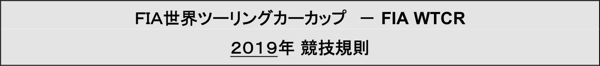
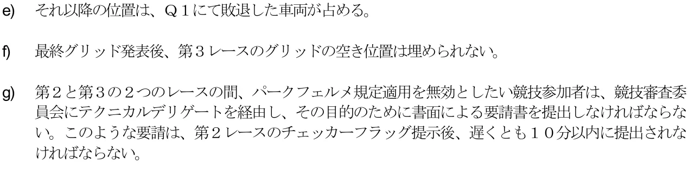
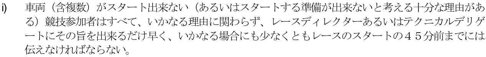
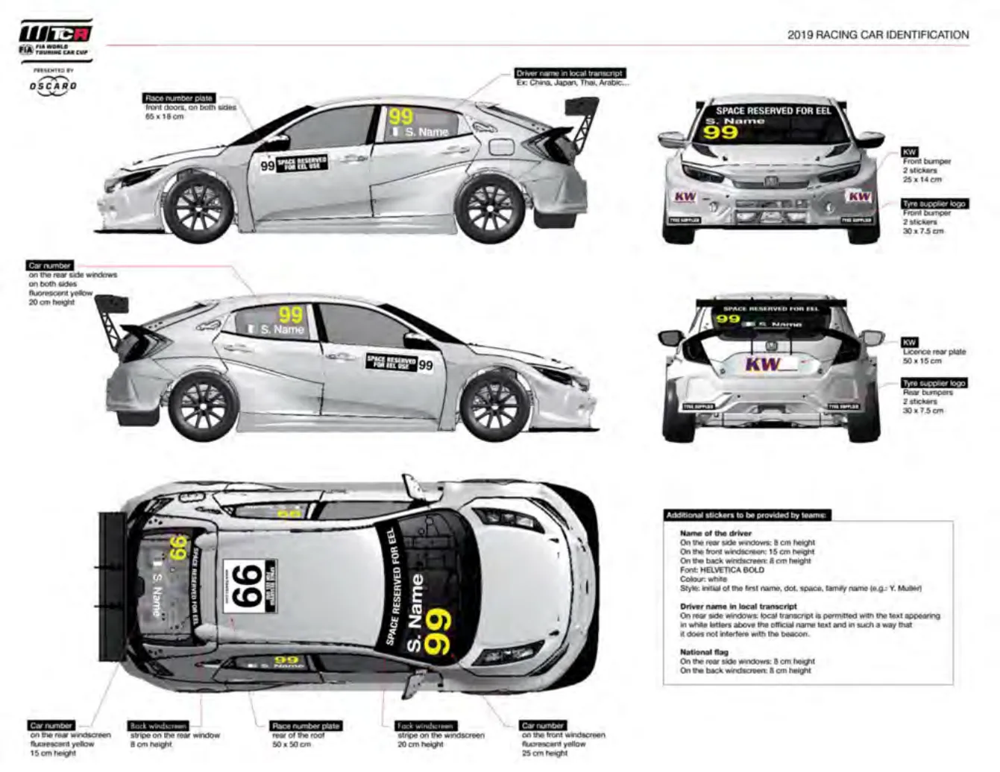
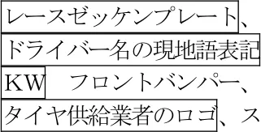
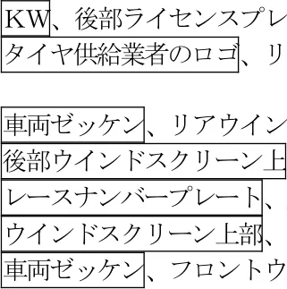

2019年競技規則_日本語版
JAF の公式サイトではありません。JAF が公開する PDF を自動変換した非公式の検索用アーカイブです。記載内容は必ず JAF の原本 PDF で出典をご確認ください。 検索と AI 質問つきのビューアで開く
P.12019 FIA World Touring Car Cup 競 技 規 則
(2019 年6 月14 日付発行版仮訳)
P.22019 FIA WTCR SPORTING REGULATIONS 目次
目 次競技規則項 目(条項No.) ············································ Page
序 文 ····························································· 1 1.規 定(1.1～1.2) ··············································· 1 2.一般的合意事項(2.1～2.2) ··············································· 1 3.一般条件(3.1) ······················································ 1 (3.2～3.4) ··············································· 2 4.ライセンス(4.1～4.3) ··············································· 2 5.カップ競技(5.1～5.7) ··············································· 2 6.ワールドカップタイトル(6.1～6.4) ··············································· 3 (6.5～6.7) ··············································· 3 7.デッドヒート（同着）(7.1～7.2) ··············································· 4 8.オーガナイザー(8.1) ······················································ 4 9.競技の組織(9.1) ······················································ 4 10.保 険(10.1) ····················································· 4 (10.2～10.4) ············································ 5 11.FIA 派遣委員（デリゲート） (11.1～11.4) ············································ 5 12.競技役員(12.1～12.2) ············································ 5 (12.3～12.5) ············································ 6 13.競技参加申請(13.1～13.7) ············································ 6 (13.8～13.10) ·········································· 7 14.パ ス(14.1～14.2) ············································ 7 15.競技参加者への指示と通知(15.1～15.4) ············································ 7 16.テスト制限(16.1) ····················································· 7 (16.2～16.3) ············································ 8 17.事 件(17.1～17.3) ············································ 8 (17.4) ····················································· 9 18.抗議および控訴(18.1～18.3) ············································ 9 19.罰 則(19.1) ····················································· 9 (19.2～19.3) ··········································· 10 20.ドライバー変更(20.1～20.3) ··········································· 10 21.計 時(21.1) ···················································· 10 22.運 転(22.1) ···················································· 10 23.参加が認められる車両の台数 (23.1) ···················································· 11 24.レース番号(ゼッケン)と車両名称 (24.1～24.2) ··········································· 11 25.書類および車両検査(25.1～25.6) ··········································· 11 (25.7～25.9) ··········································· 12 (25.10～25.15) ········································ 13 26.カップでのタイヤ供給および (26.1～26.3) ··········································· 13 競技期間中のタイヤ制限(26.4～26.7) ··········································· 14 27.競技期間中のエンジンおよび(27.1～27.2) ··········································· 15 ターボ数の制限(27.3) ···················································· 16
i
P.32019 FIA WTCR SPORTING REGULATIONS 目次
28.ウェイング(28.1～28.2) ··········································· 16 (28.3) ···················································· 17 29.調整ウェイト(29.1) ···················································· 17 (29.2～29.3) ··········································· 18 30.性能および技術仕様の調整(30.1～30.3) ··········································· 18 31.車 両(31.1) ···················································· 18 (31.2) ···················································· 19 32.車両および人員についての一般要件 (32.1～32.2) ··········································· 19 33.一般安全規定(33.1～33.2) ··········································· 19 (33.3～33.14) ········································· 20 (33.15～33.21) ········································ 21 34.ﾋﾟｯﾄ入口､ﾋﾟｯﾄﾚｰﾝおよびﾋﾟｯﾄ出口(34.1～34.6) ··········································· 21 (34.7～34.14) ········································· 22 35.燃料、給油およびピット作業 (35.1～35.4) ··········································· 22 (35.5～35.11) ········································· 23 36.フリー走行、および予選(36.1～36.5) ··········································· 23 (36.6～36.12) ········································· 25 37.プラクティスの中断(37.1～37.3) ··········································· 26 38.グリッド(38.1～38.4) ··········································· 26 (38.5～38.8) ··········································· 27 39.ブリーフィング(39.1) ···················································· 28 40.スタート手順(40.1～40.4) ··········································· 28 (40.5～40.8) ··········································· 29 (40.9～40.12) ········································· 30 (40.13) ·················································· 31 41.レース(41.1～41.3) ··········································· 31 42.ジョーカーラップ(42.1～42.4) ··········································· 31 43.セーフティカー(43.1) ···················································· 31 44.ﾌﾙｺｰｽｲｴﾛｰ（FCY）(44.1～44.3) ··········································· 31 (44.4～44.8) ··········································· 32 45.レースの中断(45.1～45.5) ··········································· 32 46.レースの再開(46.1～46.9) ··········································· 33 (46.10～46.11) ········································ 34 47.フィニッシュ(47.1～47.3) ··········································· 34 48.パークフェルメ(48.1～48.4) ··········································· 34 (48.5) ···················································· 35 49.順 位(49.1～49.3) ··········································· 35 50.表彰式(50.1～50.3) ··········································· 35 (50.4) ···················································· 36 付則１ ２０１９年シーズンの車両技術仕様のリスト ···························· 37 付則２ 第９項に従い要求される情報 ············································ 38 付則３ ２０１９年エントリーフォーム ············································ 40 付則４ ２０１９年車両表示図 ············································ 41
ii

序文
ＦＩＡは、ＦＩＡ ＷＴＣＲ技術規則に合致するＴＣＲ車両のみを対象とする「ＦＩＡ世界ツーリングカーカップ（以下、カップ）」を組織する。
－ ＦＩＡ ＷＴＣＲワールドカップは、ＦＩＡ ＷＴＣＲワールドツーリングカー優勝ドライバーのカップのタイトル１つを含む。－ ＦＩＡ ＷＴＣＲワールドカップは、ＦＩＡ ＷＴＣＲワールドツーリングカー優勝チームのカップのタイトル１つを含む。本カップは、ＦＩＡ国際モータースポーツ競技規則（以下、国際競技規則）ならびにそれらの付則（付則Ｊ項を含む）、サーキット一般規則、およびカップ特有の本競技規則により統轄される。
規則の適用および解釈に関する、ある局面は、２００９年１２月１１日の世界モータースポーツ評議会の会議にて設置されたツーリングカーコミッティに委託される場合がある。
１．規 定1.1本競技規則の正本は英語版とし、その解釈に関して論議が生じた場合には英語版が用いられる。本文中の見出しは参照を容易にするためのものに過ぎず、競技規則の一部を形成するものではない。1.2本競技規則は、ＦＩＡウェブサイト(www.fia.com)に公示され次第発効し、以前の競技規則すべてに置き換えられる。２．一般的合意事項2.1カップに出場するすべてのドライバー、競技参加者、および競技役員は、自身とその従業員、および代理人が、国際競技規則、サーキット競技のＦＩＡ一般規則、ＦＩＡ ＷＴＣＲ技術規則および本競技規則におけるすべての規定内容、ならびにそれらの補足、または改正されたものすべてを遵守する義務を負う。2.2カップとその各競技は、ＦＩＡにより本規則に従って統括される。競技とは、カップの対象となるＦＩＡ国際カレンダーのある年度に登録された一切の競技で、車両検査の予定時刻から開始し、書類検査、すべてのプラクティス走行と、レース（決勝 - 複数含）自体を含み、国際競技規則の条文で定められた抗議の提出締め切り時刻か、国際競技規則の条文で定められた技術または競技の認定が実施された時刻、いずれか遅い方で終了するものをいう。３．一般条件3.1各チームのすべての関係者に国際競技規則、サーキット一般規則、ＦＩＡ ＷＴＣＲ技術規則および競技規則のすべての要件を確実に遵守させることは、各競技参加者の責任である。競技参加者自らが競技に立ち合えない場合は、書面にてその代理人を指名しなければならない。競技期間を通じ、その期間中いかなる時でも、参加車両に求められる事項が遵守されていることを保証す
P.5ることは、その車両の担当者の責任であり、かつ競技参加者との共同責任でもある。3.2競技参加者は競技を通じ、自己の車両が技術規則や安全規定に適合していることを保証しなければならない。3.3車両検査に車両を提示することは、当該車両がすべての規則に適合していることを暗に申告したものと見なされる。3.4参加車両に関わるすべての関係者、またはパドック、ピットレーン、またはコース上に立ち入る者は、いかなる立場に関わらず、適切なパス（クレデンシャル）を常に正しく身につけていなければならない。４．ライセンス4.1カップに参加するすべてのドライバー、競技参加者、および競技役員は、現在有効なライセンスを所持していなければならない。4.2ドライバーについての最低要件は、ＦＩＡ国際ドライバーズライセンスのグレードＣ、および国際競技規則第３条９.４に従ってＡＳＮが発行する許可証である。4.3ドライバーは競技ライセンス、あるいは添付書類に含まれる、現行のメディカルサティフィケートをも所持していなければならない。５．カップ競技5.1各競技は制限付国際競技の格式を有する。5.2競技には、以下の車両のみが参加できる：適用されるＦＩＡ ＷＴＣＲ技術規則により定義される通りの、ＷＳＣ Ｌｔｄ．によって認証されたＴＣＲ車両。ただし、それらがＷＳＣ Ｌｔｄ．によって発行されたＴＣＲテクニカルフォームとＦＩＡ発行のＷ ＴＣＲテクニカルパスポートを有していることを条件とする。5.3特別な状況を除き、カップは、土曜日に１レース、日曜日に２レースの１競技３レース制とする。第１レースおよび第２レースの距離は５５ｋｍを超えない完走周回の最大数に等しい。第３レースの距離は６２ ｋｍを超える完走周回の最少数に等しい。レース距離は各競技特別規則書の付則に記載されなければならない。先頭車両は予定のレース距離が走破される周回の終了時点でコントロールライン（以下、ライン）を通過する時にチェッカーフラッグを提示される。ラインは走路とピットレーン両方を通過する単一の線である。5.4カップの競技数は最多１５戦とする。5.5競技の確定されたリスト（シリーズカレンダー）は、毎年１月１日までにＦＩＡから発表される。5.6競技開催日の３ヵ月前を過ぎてから書面をもってＦＩＡに中止が通告された競技は、ＦＩＡによってそれが不可抗力による中止であったと判断されない限り、翌年のカップに含まれることは考慮されない。5.7競技は、参加車両が１６台に満たない場合には中止することができる。６．ワールドカップタイトル
P.66.1 ＦＩＡ ＷＴＣＲワールドツーリングカー優勝ドライバーのカップのタイトルは、実際に行われた競技で獲得したすべてのポイントの合計が最も多いドライバーに与えられる。6.2 ＦＩＡ ＷＴＣＲワールドツーリングカー優勝チームのカップのタイトルは、２名のドライバーにより得られた結果を考慮し獲得したポイントが最も多い第１３項に従って登録したチームに与えられる。6.3すべてのタイトルについて、予選の最終結果の公示後に次のポイントが授与される。－１回目予選終了後： １位 ： ５ポイント２位 ： ４ポイント３位 ： ３ポイント４位 ： ２ポイント５位 ： １ポイント－２回目予選Ｑ３終了後： １位 ： ５ポイント２位 ： ４ポイント３位 ： ３ポイント４位 ： ２ポイント５位 ： １ポイントポイントは予選後に作成された認定順位を基に授与され、レースの認定順位に従って得られるポイントに追加される。6.4すべてのタイトルについて、ポイントは各競技の各レースについて次の通り授与される： １位 ： ２５ポイント２位 ： ２０ポイント３位 ： １６ポイント４位 ： １３ポイント５位 ： １１ポイント６位 ： １０ポイント７位 ： ９ポイント８位 ： ８ポイント９位 ： ７ポイント１０位： ６ポイント１１位： ５ポイント１２位： ４ポイント１３位： ３ポイント１４位： ２ポイント１５位： １ポイント得点を得るには、車両は、以下のいずれかで、自力でフィニッシュラインを越えなければならない： a)レースの優勝者として、またはb)優勝者がフィニッシュラインを越えた後ろで、およびc)優勝者が走破した距離の少なくとも７５％を走行していなければならない。第４９.２項に従い、優勝者として、または優勝者の後ろでフィニッシュラインを通過しなかった車両は、得点を得ることに関する限り、考慮されないままとなる。これらの得点は最終のレース認定順位に従い、次のドライバーに授与される。シーズン中に獲得したすべての競技結果は、最終の順位認定に考慮される。
P.76.5決勝レースが本規則４５項により中断され、４６項の下で再スタートができなかった場合、先頭車両が２周回を満たしていない場合はポイントが与えられず、先頭車両が２周回以上走行したがレースの当初予定距離の７５％を走破していない場合にはハーフポイントが与えられ、先頭車両がレースの当初予定距離の７５％以上を走破した場合はフルポイントが与えられる。本条の目的だけのために、すべてのセーフティカーの周回は走破周回として数えられない。6.6第１３.６項に従う、レース・バイ・レースのエントリーは、いかなるタイトルのポイントも得る資格はなく、得点を得ることに関する限り、考慮されないままとなる。これらの得点は最終のレースあるいは予選の認定順位に従い、次のドライバーに授与される。6.7 ＦＩＡより要請を受けた場合、優勝したドライバーはＦＩＡの年間表彰式に出席しなければならない。すべての競技参加者は、ドライバーが上述の表彰式に出席することを確実とするため最善の努力を尽くすこと。出席対象ドライバーで欠席する者には、「不可抗力」の場合を除き５千ユーロの罰金が課される。７．デッドヒート（同着）7.1同着となったドライバーあるいは競技参加者のすべての順位について与えられるポイントは合算され均等に分けられる。7.2 複数のドライバーが同一ポイントでシリーズを終了した場合、カップの最上位者は下記の方法により決定される。a) １位の回数が一番多いもの。b) １位の回数が同じ場合は、２位の回数が一番多いもの。c) ２位の回数も同数の場合は、３位の回数が一番多いもの、などのように勝者が決まるまで続ける。d)以上の方法によっても結果が出ない場合には、ＦＩＡは適切と思われる基準に従って勝者を指名する。８．オーガナイザー8.1競技を組織するための申請は、その競技が行われる国のＡＳＮに対してなされなければならず、その申請を受けたＡＳＮがＦＩＡへ申請する。９．競技の組織9.1各オーガナイザーは、ＡＳＮを通じ、付則２のパートＡに定められているインフォメーションを、少なくとも英語にて、下記に記されている詳細なタイムテーブルとオーガニゼーションアグリーメント（付則２パートＣ）と共に、ＦＩＡに競技の９０日前までに提出するものとする。付則２パートＢはＦＩＡにより完成され、当該ＡＳＮに競技の６０日前までに返送される。１０．保 険10.1 競技のオーガナイザーは、すべての競技参加者とその関係者とドライバーに、第三者保険を付保しなければならない。
P.810.2 競技の９０日前までに、オーガナイザーはＡＳＮを通じ、保険契約によって保証されている内容の詳細をＦＩＡに送付しなければならない。その保険契約は、開催国の国内法に準じていなければならない。英語に加えて開催国の国語にて作成された保険証券が競技参加者の求めに応じて閲覧できなければならない。10.3 オーガナイザーにより加入される第三者保険は、競技参加者や競技に参加するその他の一切の個人または法人がすでに加入している個別の保険に加えて付保されるもので、それらの既得権を侵害するものであってはならない。10.4 競技に参加するドライバーは互いに第三者とはならない。１１．ＦＩＡ派遣委員（デリゲート）11.1 ＦＩＡは各カップにアシスタントを伴うことのできる下記のデリゲートを任命する。－ テクニカルデリゲート－ プレスデリゲート－ メディカルデリゲートさらに、下記の者も任命することができる。－ セーフティカードライバー－ オブザーバー－ 審査員アドバイザー この資格と役割については、本規則第１１.３項）に定義されている。－ 「インシデント（事件）カメラ」デリゲート11.2 ＦＩＡデリゲートの責務は、カップの競技役員を補佐することであり、またカップを統轄するすべての規則が遵守されているかを権限の範囲内で確認し、必要ならば自らの判断による意見を述べ、競技に関する必要な一切の報告書を作成することである。11.3 審査員アドバイザーとは、経験豊富なツーリングカーのレーシングドライバーで、カップにエントリーするすべての製造者、車両銘柄、あるいは競技参加者との間になんら依存的関係を持たない者である。その役割は、モータースポーツ全般、また特にコース上におけるドライバーと競技参加者の行為に関するすべての質問ついて、競技審査委員会および／あるいはレースディレクターを補佐し助言を与えることにある。アドバイザーは競技審査委員会の会議に参加しなければならないが、そこでの投票権はない。11.4 ＦＩＡによって任命されたテクニカルデリゲートは車検に責任を持ち、国内車検委員に対する絶対的権限を持つ。１２．競技役員12.1 下記のアシスタントを伴うことのできる競技役員がＦＩＡによって任命され、競技の間ＦＩＡカップについて責任を負い、例外的状況においては、同じ週末に同サーキットで開催されるその他の国際シリーズの競技についても責任を負う。－ オーガナイザーと国籍を異にする国際審査委員２名。国際競技規則第１１項３.２に従い、競技審査委員会はその委員長の権限内の団体として審判を行う。－ レースディレクター12.2 下記の競技役員がＡＳＮにより任命され、その氏名は付則２パートＡと同時にＦＩＡに送付されなければならない。
－ ＡＳＮの国籍を有する１名の審査委員－ 競技長－ 国内車検委員長－ 国内医師団長
P.912.3 競技長はレースディレクターと常時協議しながらその役務を行う。レースディレクターは以下の事項について優先権限を有し、競技長はレースディレクターの明確な同意を得てのみ以下に関する命令を下せるものとする。a)フリー走行、予選、および決勝レースのコントロール、タイムテーブルの厳守、また必要ならば国際競技規則または競技規則に従ってタイムテーブルの変更を競技審査委員会に対し提案すること。b)国際競技規則または競技規則に従って車両を停止させること。c)フリー走行、予選の中断すること。d)スタート手順e)セーフティカーの使用f) レースの中断と再開g) フルコースイエローの使用12.4 レースディレクター、競技長、ＦＩＡテクニカルデリゲート、および競技審査委員会は、国際競技規則の定める通り、遅くとも競技の開始からサーキットに立ち会わなければならない。12.5 レースディレクターは、車両のトラック走行が許されている間、競技長、テクニカルデリゲート、および競技審査委員会と無線で連絡が取れる状態になければならない。これに加え、この間、競技長はレースコントロールに就き、全マーシャルと無線連絡を取れる状態になければならない。１３．競技参加申請13.1 カップへのエントリー申請は、ＦＩＡより入手可能なエントリーフォーム（付則３比較参照）を２０１９年１月３０日（ＣＥＴ１２時）までにＦＩＡへ提出しなければならない。下記に定められたエントリーフィー（１３.３項および１３.４項）がシーズンエントリーの締め切り日までにＦＩＡに支払われなければならない。13.2 エントリー受付開始日は２０１８年１２月１５日である。13.3 チームエントリー料金は、５０,０００ユーロである。13.4 カップのシーズンエントリーフィーは１チームのエントリー車両１台につき５０,０００ユーロである。13.5 エントリーの最大台数は、フルシーズンについて３２台に制限される。13.6 ＦＩＡは、車両１台および１競技につき１０,０００ユーロにて、レースバイレースベースで、エントリーを受け入れることができる。これについての申請は当該競技会の遅くとも１４日前までに受け取られなければならない。いかなる場合にも、３２台を超えるエントリーを１競技に受け入れることはない。13.7 申請には以下のものを含むこと。a)申請者が国際競技規則、ＦＩＡ ＷＴＣＲ技術規則および本競技規則を読み、理解し、自分自身はもとよりカップへの参加に関わるすべての者を代表してそれを遵守することの確証。b)競技参加者の名称（ライセンスに表示された通り）。
P.10c)それぞれのＡＳＮにより発行された、競技参加者ライセンスおよびドライバーライセンスのカラーコピーd)競技車両（含複数）の銘柄。e)ドライバーの氏名。チームの名称。f) ＷＳＣ Ｌｔｄ発行のレース車両のＴＣＲテクニカルフォームの１ページ目のコピーおよび、フルシーズンについては、ＦＩＡ発行のＷＴＣＲテクニカルパスポート（識別番号の表示のあるもの）g)要求のある場合、データ収集システムのサービスおよびアップデートを認証する証明書（本規則第２５.７項を比較参照）。13.8 レースバイレースエントリーを除き、１競技参加者は２台をエントリーしなければならない。13.9 ＦＩＡエントリーリストは、各競技開始の少なくとも４８時間前までに公表される。13.10 ＦＩＡの意見により、競技参加者が、カップの水準にふさわしいやり方でチームを運営できない、もしくは何らかの形でカップの評判を落とすと判断された場合、ＦＩＡは、当該競技者を直ちにカップから除外することができる。１４．パ ス14.1 パスは発行された人物によってのみ用いられ、発行された目的のためにのみ用いられなければならない。14.2 すべてのチーム員は、サーキットにて、適切なパスあるいはクレデンシャルを、明瞭に見える方法で競技会期間中、常に身に着けていなければならない。１５．競技参加者への指示と通知15.1 競技審査委員会あるいはレースディレクターは国際競技規則に従った回覧によって競技参加者に指示を与えることがある。これらの回覧はすべての競技参加者に配布され、競技参加者は署名をもって受理を認める証明をしなければならない。15.2 競技参加者への公式の指示および連絡は、専用の無線チャンネルを経由し、あるいは計時スクリーンにより与えられる場合がある。15.3 フリー走行、予選、および決勝レースのすべての順位と結果、ならびに競技役員によるすべての決定事項は、公式通知掲示板に掲示される。15.4 特定の競技参加者に関する一切の決定や通知は、その決定の２５分以内に当該競技者へ通知されなければならない。また、その通知の受け取りの証明がされなければならない。１６．テスト制限16.1 登録を提出することにより、カップに参加するすべてのドライバーは、ＦＩＡが一旦その参加を知らされたならば、カップのプロモーターによって企画された公式のテストセッションすべてに参加することに合意する。これらのテストセッションは、プロモーターが主催することができ、チームが費用を負担する。
P.1116.2 最初の競技の初日からシーズン最後の競技会まで、ＷＴＣＲサーキット（あるいはそれのレイアウト版サーキット一切）にて、いかなるテストあるいはレース開催も、カップラウンドの開催前に（あるいは同じ週末中）許可されない。a)プロモーターが組織する公式合同テストデーb)ニュルブルクリンクで開催されるＶＬＮレースおよび２４時間イベントセッション（２時間のテストセッションを含む）。c)プロモーターが競技の間に開催する、ＦＩＡの承認を得た一切のプロモーション活動（例：ＶＩＰツアー）。d)前輪駆動でない車両による、ＷＴＣＲ競技開催の少なくも１５日前までのテストあるいはレースのすべて。16.3 このような制約は、フルシーズン登録ドライバーおよび交代ドライバーにのみ適用される。１７．事 件（INCIDENTS）17.1 "事件"とは１人以上のドライバーを巻き込んだ出来事、あるいは一連の出来事、あるいはドライバーによる行為で、レースディレクターから競技審査委員会に通知された以下に該当するもの（あるいは、競技審査委員会によって、レースディレクターに対し、その調査を求める指摘／言及がなされたもの）をいう。a)本競技規則第４５項に基づきフリー走行または予選セッション、あるいは決勝レースの中断を必要とするもの； b)本競技規則もしくは国際競技規則を侵害するもの； c) １台以上の車両の反則スタートを引き起こしたもの； d)衝突を起こしたもの； e)車両のコースアウトを強いるもの； f)ドライバーによる正当な追い越し行為を妨害するもの； g)追い越しの最中に他の車両を不当に妨害するもの；レースディレクターあるいは競技審査委員会が、あるドライバーが上述のいずれかに違反したことが完全に明らかであるという意見をしない限り、２台以上の車両が関わった事件は、調査を通常受ける。17.2 a)レースディレクターによる報告や要請に基づいて、事件に関係しているドライバーにペナルティを課すかどうかの決定は、競技審査委員会の裁量に任される。b) 競技審査委員会が事件を調査中である場合は、事件に関与したドライバーの所属するすべての競技参加者に伝えるメッセージが、計時モニターに告示される（サーキット施設により可能な場合）。c)ドライバーが衝突または事件に関わり（第１７.１項参照）、競技審査委員会によってその旨を第３レース終了の３０分後まで通知された場合、当該ドライバーが競技審査委員会の同意を得ずにサーキットを離れることは禁止される。17.3 競技審査委員会は事件に関与したいかなるドライバーにも次のペナルティうち１つあるいは２つ以上を、適切な場合はそれらを同時に、および／あるいはその他適用可能なペナルティに代えて、またはそれに追加して課すことができる： a)タイムペナルティ。課されたペナルティタイムは当該ドライバーのレースタイムに追加される。b)ドライブスルーペナルティ。ドライバーはピットレーンに進入し、停止せずに、レースに復帰しなければならない。
P.12c) １０秒間のストップアンドゴー・タイムペナルティ。ドライバーはピットレーンに進入し、指定されたガレージの前に最低でも１０秒間停止した後、エンジンが停止しない限り直ちにレースに復帰しなければならない（第１７.４項ｂ）比較参照）。ペナルティ適用中は、他のいかなる作業も車両に認められない。d)当該ドライバーのその次のレースにて、いくつかのグリッド位置を下げる。e)しかしながら、上述のｂ）およびｃ）のペナルティの何れかが最後の３周回の間、あるいはレース終了後に課され通知されることになった場合、下記の第１７.４項ａ）およびｂ）項は適用されず、ｂ）の場合には３０秒、ｃ）の場合には４０秒のタイムペナルティが当該車両のレース経過時間に追加される。17.4 競技審査委員会が、第１７.３項ｂ）あるいはｃ）のペナルティの何れかを課すことを決定した場合、下記の手順に従う。a)競技審査委員会の決定が計時モニターにて通告された時刻から、当該ドライバーとその車両はピットレーンに進入する前にコース上のラインを一度だけ通過できる。また、第１７.３項ｃ）のペナルティの場合はペナルティエリアに向かい、タイムペナルティとして課せられた時間の間、そこに留まらなければならない。しかしながら、当該ドライバーがペナルティを受ける目的ですでにピット入口あるいはピットレーンに居ない限り、セーフティカー出動中あるいはフルコースイエロー期間にペナルティを実施することはできない。セーフティカーの後方で達成したいかなる周回も、最大１周回のカウントに追加される。b)タイムペナルティを受けて車両が止まっている間は、車両に作業を行うことは禁止される。ただし、エンジンが止まった場合、場合により外部のエネルギー源の助けを得て、ペナルティ時間が経過した後スタートさせることができる。ドライバーが自身の車両をスタートさせることが出来ない場合、チームのメカニックが支援を行ってよいが、エンジンをスタートさせる目的に限られる。c)タイムペナルティが経過したらドライバーはレースに再び参加することができる。１８．抗議および控訴18.1 抗議は国際競技規則に従って、１,０００ユーロを添付して行うこと。第２レースに関する抗議は、第３レース終了後に受け付けられる。18.2 控訴は国際競技規則に従って、６,０００ユーロを添付して行うこと。18.3 以下に対する控訴はできない： a) ＴＣコミッティの決定b)第１７.３項ａ）、ｂ）、ｃ）、ｄ）あるいはｅ）の下で課されたペナルティc)第１９.３項に関連して競技審査委員会により課された一切のドライバーのペナルティポイントd)第２７.１項および２７.２項の下で課された一切のペナルティe)第２９.１項に関連して競技審査委員会によりなされた一切の決定f)第３６.８項の下で課された一切のペナルティg)第３６.１２項の下で課された一切のペナルティh)第３８.２項に関連して競技審査委員会によりなされた一切の決定１９．罰 則19.1 競技審査委員会は、国際競技規則に基づき適用することのできる罰則に加え、もしくはその代わりとして
P.13本競技規則に定められている罰則を特別に課すことができる。19.2 同一のカップシーズンにて、訓戒処分を３回受けたドライバーは、３回目の処分を受けると、当該ドライバーの参加する次のレーススタートにてグリッドを１０下げるペナルティを課せられる。３回目の訓戒処分が競技の第２レースあるいは第３レースの間の事件に続くものである場合、グリッドを１０下げるペナルティはそのドライバーの次の競技のスタートについて適用される。同じ規則が次の３回の訓戒を受けた場合に適用され、カップの最後までそれが繰り返される。グリッドを１０下げるペナルティは、訓戒処分のうち少なくとも２回が運転違反に対するものであった場合にのみ課される。グリッドを１０下げるペナルティが物理的に適用不可となった場合、競技審査委員会の裁量でその他のペナルティが適用される場合がある。19.3 第１７.３項の下で適用された一切のペナルティに加えて、競技審査委員会は当該ドライバーにペナルティポイントを課す場合がある。ドライバーがペナルティポイントを１２に増やした場合、当該ドライバーは次のレースを失格となり、それに続いて１２ポイントは記録から取り除かれる（失格処分が競技の第２レースあるいは第３レースの間に起きた事件に続いて課された場合、ペナルティはそのドライバーの次の競技に適用される）。ペナルティポイントは１２ヶ月の間ドライバーの記録に残留し、それが課せられた１２か月後の同日にそれぞれが抹消される。２０．ドライバー変更20.1 競技参加者は当該競技に書類検査の時に指名したドライバーを起用することが義務付けられる。ただし、競技審査委員会が認めた「不可抗力」の場合は除かれる。新たに正規に認められた一切のドライバーは、カップのポイントを獲得できる。20.2 シーズン登録を行った競技参加者は、シーズン中、ドライバーの変更は２回のみしか認められない。一切の変更は競技審査委員会の裁量により有効にされる。20.3 最初のドライバー（第１３.７項に従ってシーズンエントリーリストに登録されたドライバー）に戻すことは、ドライバーの変更と見なされない。２１．計 時21.1 各ドライバーは、カッププロモーターにより供給された計時トランスポンダーを、競技を通して使用しなければならない。すべての競技参加者は自己の費用負担にてそのトランスポンダーを入手し、正しくそれを取り付けし機能させる責務を負う。このトランスポンダーは、当該取り付け指示書に厳密に従って取り付けされなければならない。２２．運 転22.1 ドライバーは、１人で援助なしに運転しなければならない。２３．参加が認められる車両の台数
P.1423.1 フリー走行参加、予選および決勝出走に認められる車両台数は、国際競技規則付則Ｏ項付記Ｎｏ.２に規定される通りとする。２４．レース番号（ゼッケン）と車両名称24.1 各車両は、そのドライバーのレース番号（ゼッケン）を付ける。本規則付則４に別の定めがない限り、レース番号は国際競技規則の条文（第１６項参照）に合致しなければならない。24.2 a)車両の名称あるいは銘柄のエンブレムが、車両の車体の当初の位置（含複数）に提示されていなければならない。ドライバーの氏名も車体上に表示され、読み取り易いもので（国際競技規則第１６項参照）、本規則付則４に合致するものでなければならない。b)車検に先立ち、競技参加者はオーガナイザーとプロモーターの広告を本規則付則４に従い車両に貼り付けなければならない。２５．書類および車両検査25.1 各競技参加者は、車両に関する様々な書類と共に、第４項により要求されているすべての書類を利用可能としなければならない。25.2 各競技で、オーガナイザーはすべてのライセンスを検査する。競技に参加を認められた競技参加者、ドライバーおよび車両のリストは、書類検査および車検終了後に競技審査委員会により公示される。25.3 いかなる競技参加者、ドライバーあるいは参加車両に関わるその他の者も、責任解除の署名を求められそれに応じることはできない。25.4 各車両は、発行されているＦＩＡ ＷＴＣＲテクニカルパスポートの番号によって確認される。25.5 車両検査および競技参加者の書類検査は、第１レースの少なくとも１日前に実施される。この要件は、組織上の必要により競技参加者への付則２記載事項により変更される場合がある。車両検査は各競技参加者に割り当てられたガレージにて実施される。競技審査委員会により特別措置が認められない限り、付則２の時間制限を守らない競技参加者は、競技への出場を認められない。車両は、車検員により承認されるまで競技への出場は認められない。25.6 車検委員は、a)競技期間中、いつでもドライバーおよび車両の参加資格について検査することができる（本規則第３ ０.1項および第３３.１３項を比較参照）。すべての競技参加者は、遅くとも、自身の参加する最初のレースの車検にて、各車両についての以下の原本を求めがあればいつでも車検員に提出しなければならない： － ＦＩＡ発行のＷＴＣＲテクニカルパスポート（レースバイレースのエントリーは除く）－ ＷＳＣ Ｌｔｄ ＴＣＲテクニカルフォーム－ 安全ケージのＦＩＡ公認書式－ 触媒コンバーターの証明書b)参加資格条件あるいは適合性が十分満たされているかを確認するため、競技参加者に車両の分解を要求することができる。c)本条項に述べられている権限を行使するのに伴う相応の費用の支払いを、競技参加者に要求することができる。
P.15d)必要と見なされる部品あるいはサンプル／図面およびその他一切の情報の提出を競技参加者に要求することができる。e) ＦＩＡ国際モータースポーツ競技規則第１１条１４項２.ａに従い、ＦＩＡテクニカルデリゲートは、競技の終了までいつでも安全または適格性に関して、競技にエントリーしている車両の適合性を立証するために必要であると感じるいかなる検査も、自身により実施する、あるいは代理権のある車検員に実施させる場合がある。25.7 ＦＩＡの承認するデータ収集システムa)競技参加者は、使用する車両のＦＩＡＷＴＣＲテクニカルパスポートに定められたデータ収集システムを使用しなければならない。b)このシステムは本カップの間使用されなければならず、収集されたデータを保存する目的だけの機能を提供する。このシステムはその取り付けに関連する指示書を厳密に遵守して取り付けされなければならず、競技の間常に機能しなければならない。c)このシステムの検査、サービスおよびアップデートに関連するすべての費用は、競技参加者が負担する。d)データは、競技期間中いつでも検査される。e)本システムの重量は、車両の最低重量に含まれる。25.8 事故データ記録装置（ＡＤＲ）a)この装置はシーズンエントリーする各競技参加者によってカップ中を通じて使用されなければならない。この装置は取り付け関連の指示事項を厳密に遵守して取り付けされなければならず、競技中常に機能しなければならない。b)すべての競技参加者は、この装置をカップのプロモーターより入手し、正確に取り付けし、機能させる責任を負う。c)この装置およびその装備の重量は、車両の最低重量に含まれる。25.9 事件（インシデント）カメラa)競技を通じて、競技参加者は、ＦＩＡによって指定されたカメラを車両に取り付けていなければならない。b)そのカメラ装置を入手し、取り付け関連の指示に厳密に従ってそれを取り付けるのは各競技参加者の責任である。c)カメラ映像を遮るものは何もあってはならず、カメラシステムの機能を常に確保するのは競技参加者の責務である。d)本カメラ装置の重量は、車両の最低重量に含まれる。e) ＦＩＡ競技役員は、一切のプラクティスセッションおよび決勝レース終了後、その録画を再生することができる。録画内容はＦＩＡ競技役員のみが使用することができる。f)カメラ装置の搭載が、「事件（インシデント）カメラ」デリゲートによって一旦認証されたならば、
P.16競技参加者が直接カメラを操ることは厳禁とされ、それに違反があった場合は失格までの罰則が科される。g)データカードおよび各セッションのビデオデータを競技中、常に利用可能とするのは競技参加者の責務である。25.10 車載ＴＶカメラ映像記録システムa)車両には、車載カメラ映像記録システムか、ＦＩＡ ＷＴＣＲ技術規則第５項１により定められた４kgのバラストの何れかを取り付けなければならない。このバラストは常にマーキングあるいは塗装によって明確に識別されていなければならない。b)本システムの重量は、ＦＩＡ ＷＴＣＲ技術規則で決められている車両の最低重量に含まれない。25.11 競技参加者のカメラa)トレーニングあるいは技能習得目的で、各競技参加者により提供された車載カメラを車両に搭載することが認められる。b)このカメラの搭載はカップのプロモーターによって事前に承認されていなければならない。承認された場合、以下の安全要件を満たして車検前に車両に搭載されなければならない。－ 固定装置は２５Ｇの減速度に外れることなく耐え得るものでなければならない。－ カメラは、ドライバーの視界、出口を妨げることなく、また緊急の場合の救出に差し支えないものでなければならない。c)本システムの重量は、ＦＩＡ ＷＴＣＲ技術規則で決められている車両の最低重量に含まれない。25.12 車両検査合格後に、安全性に影響を及ぼしたり、適合性に疑問が生じると思われるような方法で分解もしくは改造されたりした場合、あるいは事故に巻き込まれて同様の結果を生じた場合には、当該車両は再車両検査により承認を受けなければならない。25.13 レースディレクター、あるいは競技長は（レースディレクターの指示により）、競技の間いつでも、事故に遭遇した車両を停止させ、検査を受けるよう要求することができる。25.14 参加資格検査、および車両検査は、正式に指名された競技役員によって行われ、その競技役員はパークフェルメにおける運営に対しても責任を持ち、また唯一、競技参加者に対して指示を下すことのできる権限を有する。25.15 競技審査委員会は競技期間中、車両が検査されたら、その都度車両検査の結果を公表する。その結果にはその車両がＦＩＡ ＷＴＣＲ技術規則違反とされた場合を除き、特定の数字を含まない。２６．カップでのタイヤ供給および競技期間中のタイヤ制限26.1 ＦＩＡはカップに基準タイヤを登録する（ドライ天候用およびウェット天候用）。競技会審査委員会は、カップの第１戦中にＦＩＡテクニカルデリゲートにより選ばれたコントロールタイヤのリストを発表する。26.2 すべてのタイヤは、ＦＩＡによって指定されたタイヤ製造者により供給された状態で使用されなければならない。それらはカップ用の基準タイヤによって決定された仕様に合致していなければならない。26.3 タイヤの化学処理および／あるいは機械的処理は禁止される。ただし、走路から拾い上げる破片の除去と洗浄のための水と洗浄剤は除く（当該タイヤが使用された走行セッションの終了後のみ）。当初のタイヤトレッドおよびプロファイルを改造することまたは切除することはできない。
P.1726.4 すべての新しいタイヤは当該競技の期間、ＦＩＡの指定したタイヤ製造者により集められなければならない。新しいタイヤとは、以前に登録および／あるいは競技参加者への配分がされたことのないタイヤをいう。
26.5 競技会期間中のタイヤ制限a)ドライ天候用タイヤ： 1)ドライバーが最初に参加する競技では、２２本以下のドライ天候用タイヤを使用することができる。2)ドライバーの第２回目の競技参加からは、あるいは第２０項に従うドライバー交代の場合、最大１８本の新しいタイヤを含む２６本以下のドライ天候用タイヤを使用できる。カップの前回競技期間中に同一レース番号に登録されたタイヤは、同じドライバー（または交代ドライバー）に再配分することができ、従って、これらの以前に使用されたタイヤが、ＦＩＡによって規定されている追跡システムにより識別可能である限り、許されるタイヤの数に数え入れられる。これらのタイヤは、配分のために提示される前に、当該製造者によって事前に認証を受けていなければならない。提示に適するタイヤを持たないドライバーは、それらのタイヤを使用する権利を喪失する。3)本規則第２０項に従うドライバー交代の場合、競技参加者に、交代前のドライバーの分配分より提示する適切なタイヤがない場合、交代するドライバーは、最大１８本の新しいタイヤを使用する。b)ウェット天候用タイヤ：競技期間中ドライバーは、１６本を超えるウェット天候用タイヤを使用することはできない。26.6 タイヤのコントロールa)タイヤのコントロールは、ＦＩＡによって決められた手順に従って実施される。b)競技で使用されることになっているすべてのタイヤの両側は、特有な識別マーキングがなされていなければならない。c)不可抗力の場合を除き（競技審査委員会によって、そのように認められる場合）、競技で使用される予定のすべてのタイヤのリストは、第１次車検終了前に、配分のため、ＦＩＡテクニカルデリゲートに提示されなければならない。d)競技参加者は、競技の間いかなる時でも、正規に任命された車検員あるいはマーシャルが自由にタイヤのチェックができるようにしなければならない。e)タイヤは空気あるいは窒素でのみ膨張させることができる。26.7 タイヤの使用a)すべてのタイヤはＦＩＡが指定したタイヤ製造者により発行された規則に従って使用しなければならない。b)適切な識別表示のないタイヤの使用は、競技期間中すべて、厳禁とされる（スタート手順およびグリッド上を含む）。c)ウェット天候用タイヤは、そのプラクティスセッション（フリープラクティス、予選）、決勝レースについてトラックがウェット状態であると競技長／レースディレクターが宣言した場合にのみ使用することができる。d)タイヤ加熱／保温装置の使用は禁止される。さらに、競技参加者は、競技開催場所のどこにおいても
P.18タイヤヒーティングあるいは保温装置、化学的タイヤ処理／コンパウンドを有することは許されない。疑義を避けるために、タイヤ/ホイールの温度を自然の周囲温度以上に異常に上昇させる方法は許されない。e)ガレージから取り出してピットレーンまたはグリッドに持ち出されたタイヤは、決して覆われていてはならない。f)水分を除去することのみを目的としてタイヤ内の空気を乾いた空気で置き換えることは、そのような操作を行うのに必要とされる以上にタイヤが周囲圧力以下の圧力で収縮し続けない限り、許可される。２７．競技期間中のエンジンおよびターボ数の制限27.1 シーズン中のエンジン数の制限a)車両は、シーズンの間に１基を超えるエンジンを使用できない。エンジンはドライバーのゼッケンに関連させられる。ドライバーが車両を変えた場合も、その新しい車両が異なるモデル（異なるＦＩＡ公認書式番号）あるいは競技参加者でない限り、ドライバーの番号に追従する。ドライバーが１つ以上の競技に欠場した場合には、このエンジンはレース車両のＦＩＡテクニカルパスポートの番号に関連付けられる。b)車両のタイミングトランスポンダーが一旦ピットレーンを離れたことを示したならば、エンジンは使用されたと判断される。c)各エンジンは競技参加者が最初にそれを使用する前に、ＦＩＡテクニカルデリゲートによって封印されなければならない。エンジンは、シリンダーヘッドおよびオイルサンプの分解ができないような方法で封印される。１箇所以上の封印の損傷箇所は、事前にカップのテクニカルデリゲートあるいはＦＩＡ技術部によって立証されなければならず、違反があった場合は罰則の対象となり、競技失格を招く場合もある。いかなる封印も損傷があれば、それはエンジンを交換したものと見なされる。d)競技参加者によるエンジンの交換は、ＦＩＡテクニカルデリゲートに書面にて要請されなければならない。一切のエンジン交換は、競技審査委員会によって不可抗力であることが認められる場合を除き、当該ドライバーの次のレース参加のスタートを自動的にグリッド最後尾からとし、立証の責任は競技参加者にある。27.2 シーズンの間で許されるターボの数： a)いかなる車両もシーズンの間に５つを超えるターボを使用することはできない。ターボはドライバーのゼッケンに関連させられる。ドライバーが車両を変えた場合も、その新しい車両が異なるモデルあるいは競技参加者でない限り、ドライバーの番号に追従する。ドライバーが１つ以上の競技に欠場した場合には、このターボはレース車両のＦＩＡテクニカルパスポートの番号に関連付けられる。b)車両のタイミングトランスポンダーが一旦ピットレーンを離れたことを示したならば、ターボは使用されたと判断される。c)各ターボは競技参加者が最初にそれを使用する前に、ＦＩＡテクニカルデリゲートによって封印されなければならない。ターボは、関連するＦＩＡ ＷＴＣＲ技術規則に定める通りの、リストリクター、コンプレッサーハウジング、およびタービンハウジングの分解ができないような方法で封印される。１箇所以上の封印の損傷箇所は、事前にカップのテクニカルデリゲートあるいはＦＩＡ技術部によって立証されなければならず、違反があった場合は罰則の対象となり、競技失格を招く場合もある。いかなる封印も損傷があれば、それはターボを交換したものと見なされる。各封印されたターボは、競技の間いかなる時も検査できなければならない。
P.19d)競技参加者によるターボの交換は、ＦＩＡテクニカルデリゲートに書面にて要請されなければならない。第２７.２項ａ）で許された数に追加してターボが使用された場合は、競技審査委員会によって不可抗力であることが認められる場合を除き、当該ドライバーのスタートは自動的にそのドライバーが参加する次のレースのグリッド最後尾からとなり、立証の責任は競技参加者にある。27.3 エンジンおよび／あるいはターボ交換に対する競技審査委員会の決定によるペナルティに対して、控訴の申し立てはできない（国際競技規則第１２項２.４を比較参照）。２８．ウェイング28.1 いかなる車両の重量検査も、競技中常に行うことができ、それは以下の通り：カップに参加するすべてのドライバーは、完全なレース装備を整えて、シーズンの最初の競技およびシーズン中盤に、車検終了時に遅れることなく重量計測される。シーズンの開幕戦より参加しないドライバーは、その初参加の競技会にて計測される。ドライバー重量はＦＩＡテクニカルデリゲートの管理下におかれるリストに掲載される。これらの重量は、ドライバーが立ち会わないで実施されたいかなる車両重量計測についても、公式のものとなる。28.2 車両の最低重量は、付則１に従うものでなければならない。
a)予選中、およびその後： i) ＦＩＡテクニカルデリゲートは、ピットレーンおよび／あるいは１番ピットにできるだけ近い場所に重量計測装置を設置し、このエリアが重量測定に使用される。ii) ＦＩＡテクニカルデリゲートが選出した車両が重量測定を受ける。ＦＩＡテクニカルデリゲートは重量測定に選ばれた車両のドライバーに交通信号灯あるいは旗合図によってその旨を通知する。iii)ドライバーは重量計測に選ばれたことを通知されたなら、外部の援助を受けることなく直接重量測定エリアへと進まなければならず、エンジン停止を要請される場合がある。iv) そこで車両の重量検査がドライバーを伴ってあるいは伴わずに実施され、反則があれば書面にてドライバーまたは競技参加者代表者に通知される。v)車両は、外部の援助を受けることなく、自力で測定エリアに到着しガレージへ戻ることができなければならない。それができない場合は、その車両はマーシャルの管理下におかれ、そのマーシャルは計測のため、あるいはガレージへと当該車両を移動させる。vi) ドライバーおよびその車両は、ＦＩＡテクニカルデリゲートあるいはその指名を受けた者の許可なしに重量計測エリアを離れてはならない。b)決勝レース終了後：テクニカルデリゲートは、不可抗力の場合を除き、自身の選択する順位認定を得た車両の重量を測定する。c)上記ａ）またはｂ）における計量時に付則１に規定された重量を下回った場合は、第２８.３項のペナルティが課される。ただし、その計量結果における重量不足が、車両部品の偶発的損失によるものである場合を除く。d)重量測定に選出された後、決勝レース終了後、または測定中、いかなる固体、液体、気体あるいはその他の物質など、いかなる性状に関わらず、車両に加えたり、置いたり、または車両から取り除いてはならない（車検委員が役務の権限内で行う作業の場合、および決勝レース後はＦＩＡ ＷＴＣＲ技術規則に従う場合を除く）。e)車検委員とオフィシャルの他は誰も、測定エリアに立ち入ることはできない。かかるオフィシャルの
P.20許可がない限り、いかなる種の介入もそこでは許されない。28.3 これら重量測定に関わる規則に違反した場合、当該車両は以下のペナルティのうちひとつが課される場合がある。a)プラクティス／予選中： － フリープラクティスにて達成したすべてのタイムの取り消し－ 予選にて達成したすべてのタイムの取り消しb)レース中： － 当該車両の失格２９．調整ウェイト29.1 調整ウェイトはエントリーした各車両モデルに対して、その最低重量に加えて、以下の通りラップタイム計算に従い適用される： a)ラップタイム計算予選セッションにて、各モデルのトップ２台の車両のベストラップタイムが、１１４秒の標準ラップタイムを基準に照らし合わされ平均される。競技の３つのレースでの、各モデルのトップ２台の車両（ベストラップタイム）各々の２つのベストラップの平均値が平均され、１１４秒の標準ラップタイムを基準に照らし合わされる。２回の予選セッション、３回のレースは、全体平均の計算のため、２.０/２.０/０.７/０.７/０.７の基準でウェイトが載せられる。所与のモデルの車両が予選あるいは決勝のいずれにおいてもラップタイムを達成しない場合、そのセッションあるいは決勝レースに載せられるウェイトは０となる。i)同一車両について考慮される基準に照らし合わせる２周回の差は０.３秒に制限される。最速の２台の車両の基準に照らし合わせるタイムの平均の差は、０.３秒に制限される。ii)いかなるセッションであっても、１つのモデルについて１台のみが参加している場合は、それが達成したタイムが計算に使用されるタイムとなる。iii)計算は、３競技の全平均に基づく。ただし、各モデルの最初の２つの競技の後に初めて適用される場合は除く。例えば、競技２、３、および４の結果が競技５の調整ウェイトを決定する。iv) 所与のモデルについて、競技ごとの３つの（あるいは最初の２競技については２つの）平均ラップタイムが＋１.０秒の枠内にない場合、この枠をはみ出す平均ラップタイムは、最良の平均ラップタイム＋１.０秒の合算により置き換えられる。v)計算の結果は直近の小数点第１位に四捨五入される（＋０.２３５は＋０.２に切り下げられ、＋０.３５０は＋０.４に切り上げられ、＋０.１４９は０.１に切り下げられる）。vi) いかなる理由に関わらず、実際のタイムの計測が不可能である場合、当該競技の競技審査委員会は、計算のため想定タイムを割り当てる。vii)競技終了前に、競技審査委員会は、計時委員が発表した暫定結果に基づき各モデルについて達成されたすべてのラップタイムの詳細サマリーを公表する。それは、調整ウェイトの計算の基準として利用されるものとなる。これらが一旦発表されたならば、競技参加者は、公式通知掲示板にこれらの暫定結果掲示直後の遅くとも３０分以内に、ラップタイムのサマリーに関する訂正を競技審査委員会に求めることができる。ただし、当該競技の競技審査委員会により物理的に不可能
P.21であると認められる場合は除く。本件に関わる一切の競技審査委員会の決定は、控訴の対象とはならない。b)ウェイトの適用i)最大調整ウェイトは、６０kgとする。ii)レースバイレースのエントリーについては、公表される調整ウィエトに２０ｋｇの追加、およびパフォーマンスチャートの調整が適用される。iii)最速モデルより遅いモデルの場合、０.１秒差ごとに６０kgを最大として最大調整ウェイトより１０kgが差し引かれる。基準となる最速モデルには、常に最大調整ウェイトが加えられる。iv) 競技参加者がシーズンの途中で自身の車両モデルを変更する場合、その変更モデルが最初の参加
時の最大調整ウェイトが適用される場合を除いて、その競技参加者は変更後のモデルに対応する調整ウェイトを受ける。c)モデルごとの調整ウェイト適用暫定リストが、第２９.１項ａ）viiの下で割り当てられる想定タイム算出に必要な一切の計算／正当性証明を含め、当該競技開始の遅くとも７日前にＦＩＡにより発表される。すべての要請は、次の競技の車検終了前に、情報として競技参加者に送付され、この競技の競技審査委員会に決定を求めるために送付される。一切の新しいリストの告示は、遅くとも当該競技の開始の前日までに行われ、それが最終決定となる。29.2 調整ウェイトの追加は、ＦＩＡ ＷＴＣＲ技術規則第５.２項に定められているように、車両の最低重量に加えて適用される。ウェイトは同一条項の条文に従って封印および配置されなければならない。それは常に、マーキングあるいは塗装によって明確に識別されていなければならない。このウェイトは、「不可抗力」の場合を除き、競技の間一度のみ封印され、ＦＩＡ ＷＴＣＲ技術規則第５. ２項に従って配置されなければならない。29.3 調整ウェイトは、常に車両モデルに対して付与する。３０．性能および技術仕様の調整30.1 車両の性能および技術仕様の調整はＴＣコミッティにより、および／あるいはＴＣコミッティの管理下でＦＩＡウェブサイト（www.fia.com）に公示されている内部規定に決められた目的、使命および実施規定に従い実施される。30.2 性能の調整ＴＣコミッティは、性能の調整に関わる一切の決定を行うことができる。30.3 技術仕様：カップの対象となる競技に参加する競技参加者は、本規則の付録1に定義されている技術的構成でその競技車両を提示しなければならない。安全上の理由、またはＦＩＡ ＷＴＣＲの技術規則に適合させるためのみの車両の改造要求は、当該車両の参加する競技が始まる少なくとも１５日前までにTC委員会に提出することができる。３１．車両31.1 ツーリングカー（ＴＣＲ）についてのＦＩＡ ＷＴＣＲ技術規則が、本規則に別の定めがない限り、カップ
P.22に適用される。31.2 各競技にて１名のドライバーにつき１台の車両のみをエントリーすることができる。Ｔカー／スペアカーは禁止される。３２．車両および人員についての一般要件32.1 以下を除き、走行中の車両と車両の競技参加者に関与する者またはドライバーとの間で、いかなる信号の交信も行ってはならない： a)ピットサインボード上の読み取り可能なメッセージ。b)ドライバーのジェスチャーによる合図。c)ピットから車両へのラップトリガーシグナル。ラップマーカー送信機は電池式でなければならず、一旦始動したら、その後は独立した機能を持たなければならない（電気配線、光ファイバー、無線、無線ＬＡＮなどで他のピット機器と接続されていてはならない）。また同送信機は、ピットレーン側にしっかりと固定され、外部の情報を受信できないようになっていなければならない。こうしたラップトリガーは、ラップマーク以外のデータをピットから車両に送信するために使用してはならない。ラップマークは繰り返し送信しなければならず、明らかに一定でなければならない; d)ドライバーとチームとの間の無線による会話。e) ５.４から５.８ＧＨｚの範囲内の電磁放射線は、ＦＩＡの同意書がない限り禁止される。32.2 競技中に車に作業することができる作業スタッフの数は、２台エントリーチームで１０人を超えてはならない。競技前車検開始から競技の最終レーススタートの２時間後まで、いかなるチームも上記の車両作業に同時にあたるチーム員数を超えることはできない。作業スタッフは車両の作業中常にＦＩＡにより提供された腕章を身に着け明確に識別されていなければならない。疑義を生じないよう、チーム代表者、ＷＴＣＲドライバーおよび、スポンサー、マーケティング、広報あるいは保安にのみ関連する責務を有するスタッフは、作業スタッフとは見なされない。競技参加者につき、すべての作業者、免除者およびシングルレーススタッフを含む１４名の名簿が車検の開始前にＦＩＡに提出されなければならない。これらの要員のみが競技の間に腕章を身に着けることが認められる。これらの規則の一切の違反は、罰金および／あるいは競技審査委員会の裁量により失格までの罰則の適用を招く場合がある。３３．一般安全規定33.1 ドライバーに対する公式な指示は、国際競技規則に定められたシグナルによって与えられる。競技参加者は、これらと類似する旗を一切使用してはならない。ドライバーとメカニックは常にコースマーシャルの指示に従わなくてはならない。33.2 ドライバーは、車両を危険な場所から移動させるのに絶対必要な場合以外は、定められた方向と反対に走行することを厳禁とする。車両はマーシャルによって危険な位置から押して移動させることのみが認めら
P.23れる。33.3 走路に車両が停止した場合、その他の競技参加者に危険を及ぼしたり、邪魔となることのないよう、できる限り早急に車両を取り除くことはマーシャルの責務である。いかなる場合であっても、ドライバーは正当な理由なく走路に車両を停止させてはならない。フリー走行、予選、あるいはレースに合流するドライバーを支援するための機械的支援策は一切使用できない（第４０.５項の場合を除く）。33.4 コースを離れたり、ピットやパドックエリアに進もうとするドライバーは、危険を冒すことなくそれを実行できるという確信のもと、十分な時間的余裕をもって、その意志を合図で知らせなければならない。33.5 フリー走行、予選、および決勝レース中、ドライバーは定められたトラックのみを使用するものとする。また、常にサーキットにおけるドライビングマナーに関する国際競技規則の規定を遵守しなければならない。33.6 車両をコース上に放置するドライバーは、ギアをニュートラルに入れるか、またはクラッチを切り、車両にはステアリングホイールを装着しておかなければならない。33.7 車両の修理は、パドック、ピットの中あるいはグリッド上においてのみ行うことができる。33.8 オーガナイザーは容量が５ｋｇの消火器を車両１台に最低２個提供し、それらが正しく機能することを確実にしなければならない。33.9 国際競技規則または本競技規則で特に認められている場合を除き、パドック、競技参加者指定のガレージエリア、ピットレーンまたはスターティンググリッド以外で、ドライバー以外の者が停止している車両に触れてはならない。33.10 ピットレーンにおいては、いかなる時にも、車両が自己の動力で後進することは許されない。33.11 各走行セッションの１５分前から５分後に至るまでの時間、および決勝レース直前のフォーメーションラップ開始後から最後の車両がパークフェルメに進入するまでの間は、以下を除き、いかなる者もトラックへ立ち入ってはならない。a)業務を遂行中のマーシャルおよびその他職務遂行上許可を受けた者。b)運転中あるいはマーシャル指示下のドライバー。c)スタート手順の場合のみ、競技参加者。d)第４５項に従い、レース中断の間にグリッド上で作業する競技参加者。33.12 決勝レース中、第４０.３項および第１７.４項ｂ）の条件の下で、外部始動装置の使用を認められているピットレーンを除き、エンジンの始動を行えるのはスターターのみである。33.13 競技に出場するドライバーは、常に国際競技規則Ｌ項に定められている装備を着用していなければならない。ドライバーのクラッシュヘルメットは、次の基準の１つに公認されていなければならない： － ８８５９－２０１５（テクニカルリストＮo.４９）、－ ８８６０－２００４または８８６０－２０１０（テクニカルリストＮo.３３）－ ８８６０－２０１８または８８６０－２０１８－ＡＢＰ（テクニカルリストＮo.後日掲載）33.14 負傷したドライバーの気道へのアクセスがとれるようにするために、必要が生じた場合カップの各参加者は、シーズン中最低１回以下の試験を実施できる：ドライバーは、フルフェースヘルメットと前部頭部拘束装置を正しく装着し安全ハーネスを留めた状態で車両内に着座する。
P.24２名の追加の救援者の助けを得て、ＦＩＡメディカルデリゲート、あるいはその要請によって競技会の医師団長は、ドライバーの頭部が常に中立状態に保たれたまま、ヘルメットを取り外すことができなければならない。これが不可能な場合は、ドライバーはオープンフェースのヘルメットを装着することが求められる。33.15 ピットレーンにおいて、競技期間中は６０km/hの制限が適用される。決勝レース中を除き、この制限速度を超えたドライバーに対しては、制限を超える各km/h毎に罰金が課せられる。しかしながら競技審査委員は、ドライバーがなんらかの優位性を得ようとして速度超過したと疑われる場合、追加のペナルティを課す場合がある。決勝レース中にこの制限速度を超えたドライバーに対しては競技審査委員会から第１７. ３項ａ)またはｂ)に定められる罰則の何れかが課せられる場合がある。33.16 フリー走行、予選、または決勝レース中にドライバーが重大なメカニカルトラブルを抱えた場合、安全が確保でき次第トラックを離れるか、ピットに戻らなければならない。33.17 ウェットの宣言がなされたコースを走行する場合はつねに前照灯、リアライト、およびリアレインライトを点灯していなければならない。ライトが機能してないドライバーをそれが理由で停止を求めるかどうかは、レースディレクターの裁量に任される。それによって停車した車両は、不具合が修正されれば競技に復帰することができる。33.18 参加車両につき６名のチームメンバーのみ（各自特別な証明書を発行され、それを着用する）が、フリー走行、予選中および決勝レーススタート後、シグナリングエリアへの立ち入りを許される。１６歳未満の者のピットレーン、およびピットウォール、またはスターティンググリッドへの立ち入りを禁じる。33.19 警備あるいは支援を目的としてＦＩＡが特に許可した場合を除き、ピットエリア、トラック、および観客エリアへの動物の持ち込みを禁じる。33.20 レースディレクター、競技長、あるいはＦＩＡメディカルデリゲートは、競技会の医師団長の合意をもって、競技中いかなる時にもドライバーに対し身体検査を受けるよう要求することができる。33.21 国際競技規則の一般安全要件または本競技規則の違反は、当該車両およびドライバーの競技失格を招く場合がある。３４．ピット入口、ピットレーンおよびピット出口34.1 ドライバーは常にマーシャルの指示に従わなければならない。34.2 第1セーフティカーラインとピットレーンの開始地点との間の走路区画が「ピット入口」と指定される。34.3 ピットレーン終点と第２セーフティカーラインとの間の走路区画が「ピット出口」と指定される。34.4 ピットレーンを２本に分けてそれぞれ次の通りに定義する。ピットウォールに隣接するレーンを"ファストレーン"とし、ガレージに隣接するレーンを"インナーレーン"とする。車両の作業は、インナーレーンにおいてのみ行うことができる。34.5 スタート手順の間どの時点であっても車両がグリッドから押し出されることを除いて、競技参加者指定のガレージエリアよりピットトレーンの終了地点へ自走してのみ移動することができる。34.6 ピットレーンからレースをスタートしようとする一切のドライバーは、１０分前のシグナルが出されるまで競技参加者指定のガレージから運転して出ることはできず、ファストレーンのコントロールライン内に縦一列に停止しなければならない。ピットレーンを離れる許可が出たら、ピットレーン終了地点に到着した順に離れなければならない。ただし、不当に遅れた車両がある場はその限りではない。
P.2534.7 競技参加者はピットレーンのいかなる部分にも線を塗装してはならない。34.8 ファストレーンにはいかなる器材も残してはならない。車両は、ドライバーが通常のポジションでステアリングホイールの後方に着座した状態で、かつ自力走行でのみファストレーンに入る、あるいは留まることができる。34.9 競技参加者関係者がピットレーンに入ることが許されるのは、ピット作業を必要とする直前のみであり、ピット作業が終了しだい、退去しなければならない。支持アームは（インナーレーンとガレージを分ける線より計測して）長さ４メートルを超えてはならず、すべての懸架機材およびホースが地上から２ｍ未満とならないよう配置されなければならない。34.10 車両は、ピットレーンにいる要員あるいはその他のドライバーを危険にさらすような方法でガレージあるいはピットストップより出ていってはならない。ファストレーンの車両がインナーレーンを離れる車両に優先する。34.11 車両はすべての走行セッション、予選セッションにて、斜めに編成されて停車しなければならない（車両後部をピット入口に約４５度の角度で前をピットレーン出口に向けて）。これは１本以上のホイールを交換する場合でも同様である。この位置にてのみ、ピットレーン作業エリアに停車している車両に作業を行うことができる。予選中、すべての競技車両はコース上にいない間はピットレーンに留まらなければならない。予選セッションが終了し車両が一切の予選後車検を終了しパークフェルメから解放されるまで、競技車両はガレージあるいはパドックエリアに居ることは、ＦＩＡテクニカルデリゲートの明らかな許可がない限り、いかなる時にも認められない。34.12 すべてのフリー走行、予選、および決勝レースの間、ガレージ入口(ピットレーン側)はガレージ内で何が行われているのかが明瞭に見えるのを妨げる覆いなどが一切無い状態でなければならない。競技の間、車両はガレージにある時常に前面をピットレーンへ向けて停止していなければならない。34.13 すべてのフリー走行、予選、および決勝レースでは、車両はピット出口解放後にのみファストレーンを走行することが認められる(第３４.６項、Ｑ３および／あるいはレース中断の場合を除く)。34.14 同一週末に開催されるその他の競技関連の活動の間、車両は、レースディレクターの合意を得た上でのみピットレーンに移動させることができる。３５．燃料、給油およびピット作業35.1 入札により、ひとつの燃料供給業者がＦＩＡの指名を受ける。その供給業者の提供する、ＦＩＡ承認の比較分析管理装置が唯一認証された装置である。付則Ｊ項第２５２条９項が、競技後のすべての管理に適用される。35.2 すべての車両には、タンクから燃料を取り除くために車検員が使用できる自動閉鎖コネクターが取り付けられていなければならない。このコネクターは、ＦＩＡの承認を受けていなければならず（テクニカルリストＮｏ.５参照）、エンジンの高圧ポンプの直前でフィードラインに取り付けられていなければならない。35.3 競技参加者は、燃料のサンプルを取り出すために使用できるカットオフ装置のついた燃料パイプを利用可能としなければならない。このパイプは車両の外側の地面に届くよう十分な長さがなければならない。35.4 車両には常にサンプル取り出しのために２kgの燃料が搭載されていなければならない。その２kgの燃料はサンプル抽出自動閉鎖コネクターを通じてタンクから抽出されなければならない（ＦＩＡ ＷＴＣＲ技術規則第７項２）。
P.2635.5 燃料の冷却は、どのような方法であっても禁止される。35.6 車両に作業が行われている間を除き、すべての人はピット内に留まっていなければならない。35.7 エアージャッキの安全ロックは必須であり、ジャッキアップされている車両の下でメカニックが作業している場合に使用しなければならない。35.8 フリー走行、予選、および決勝レースの間、給油および／あるいは燃料を取り除くことは禁止される。35.9 喫煙はピットウォールからガレージの裏手まで禁止される（電子たばこも含む）。35.10 給油あるいは燃料取り扱い作業の間は： a)当該要員はＦＩＡ基準８８５６－２０００に従う難燃性の着衣を身に付けていなければならない（オーバーオール、グローブ、バラクラバ）b) ＦＩＡ基準８８５６－２０００に従う難燃性の着衣（オーバーオール、グローブ、バラクラバ）を身に付けたアシスタントが、適切な内容量の適した消火器を備えて立ち会っていなければならないc)車両はホイールを装着し、または地上の「スケート」上になければならない。d)車両には、外側の介入であっても一切のなんらの作業も禁止される。e） 給油中ドライバーは車両内に留まっていてはならない。
35.11 ピット作業および給油に関する国際競技規則または本競技規則の条項に違反した車両およびドライバー（含複数）は、競技失格となる場合がある。３６．フリー走行、および予選36.1 本競技規則で別に規定される場合を除き、すべての走行セッションにおけるピットレーンおよびトラック上で適用される規則ならびに安全規定は、決勝レースと同一とする。36.2 走行セッションに１回も参加しなかったドライバーは、決勝レースでスタートすることはできない。36.3 a)フリー走行、予選中は、ピットレーン出口でグリーンおよび赤ライトが点灯される。車両は、グリーンライトが点灯している時のみピットレーンを離れることができる。さらにコース上の車両が接近してくる場合には、青旗あるいは青色の点滅灯がピット出口で示され、ピットレーンを離れるドライバーに警告を与える。b)各走行セッション終了時点で、すべてのドライバーはコントロールラインを１度のみ通過することができる。36.4 最初は４５分間、もう１つは３０分間のフリー走行セッション２回が行われる。追加の３０分間のプライベートテストをＦＩＡの合意をもって、予定することができる。36.5 ２回の予選が行われる：１回の３０分の予選（ストリートサーキットでは４０分）、もう１つは３部で構成（Ｑ１、Ｑ２、Ｑ３）される予選セッション１回が次の通りに行われる。a)予選１（Ｑ１）すべての車両は最初のＱ１の２０分間（ストリートサーキットでは３０分間）に参加する。このセッションの終了時点で、すべての車両はピットレーンへ戻る。Ｑ１完了後、Ｑ２に参加できない車両は「パークフェルメ」規定の下におかれる。これらの車両に実施されていた一切の作業は、チェッカーフラッグ提示時点で止めなければならず、当該車両はセッションの残りの時間、停止していなければならない。Ｑ２に参加を認められた車両のみが、Ｑ１のチェッカーフラッグ提示後に作業できる。
P.27Ｑ２に出走できないドライバーを決定するため、２名以上のドライバーがＱ１で同一タイムを達成していた場合、それを最初に達成した方が優先される。Ｑ１とＱ２のインターバルは少なくとも５分あける。b) 予選２（Ｑ２）Ｑ１の暫定順位で上位１２台の車両がＱ２の１０分間（ストリートサーキットでは１５分間）に参加する。このセッションの終了時点で、すべての車両はピットレーンへ戻る。Ｑ２完了後、Ｑ３に参加できない車両は「パークフェルメ」規定の下におかれる。これらの車両に実施されていた一切の作業は、チェッカーフラッグ提示時点で止めなければならず、当該車両はセッションの残りの時間、停止していなければならない。Ｑ３に参加を認められた車両のみが、Ｑ２のチェッカーフラッグ提示後に作業できる。Ｑ３に出走できないドライバーを決定するため、２名以上のドライバーがＱ２で同一タイムを達成していた場合、それを最初に達成した方が優先される。Ｑ２とＱ３のインターバルは少なくとも５分あける。c) 予選３（Ｑ３）Ｑ２の暫定順位で上位５台の車両がＱ３に進むことができる。Ｑ３では、各参加資格のあるドライバーが１周回のみの計測ラップを完了することができる。各参加資格のあるドライバーは１回のウォームアップ（アウトラップ）、１回の計測ラップ、および１回の減速ラップ（インラップ）を完了する。ピットレーンからの走行の順序は、競技参加者の選択に基づき、Ｑ２で最速のドライバーの競技参加者が最初にＱ３のスタート位置を選び、Ｑ２で得た結果に従って続く競技参加者がその位置を選んでいく。Ｑ３のスタート位置を競技参加者が選択後、それらは競技審査委員会により認証されなければならない。競技参加者が所与の時間内にスタート位置を選択しない場合、選択権を失う。Ｑ３走行に関するすべての情報は（ピットレーンの開閉など）計時モニターにも表示できる。・ 緑のピット出口ライトが点灯すると、Ｑ３の開始の合図となる。・ ２０秒の間に、第１ドライバーはピットレーンを離れ、アウトラップを開始する機会がある。赤色のピットライトが２０秒後に点灯する。・ 車両がピットレーン外側のラインを最初に通過して３０秒後、緑のピット出口ライトがさらに２０秒点灯する。第２ドライバーはここでピットレーンを離れることができ、アウトラップを開始する機会がある。この手順がすべての５名の資格あるドライバーがピットレーンを離れるまで繰り返される。・ ドライバーがピットレーンを時間内に離れることは自己の責任である。・ 所与の時間内にピットレーンを離れなかった一切のドライバーは、Ｑ３に参加できない。その場合、ピットの灯火（緑の点灯になった後）は１００秒の間赤色となり、また次のドライバーのスタートのために緑に戻る。・ ドライバーのアウトラップおよびインラップの時間は、Ｑ１あるいはＱ２の間で当該ドライバーが達成した最速ラップタイムの１４０％より遅くなることは出来ない。アウトラップはピットアウトループから、またインラップはピットインループから計測されると理解される。・ 計測ラップは走路上にて完了されなければならない。・ Ｑ３の完了後（減速周回の後）トラック上にある車両は、レースオフィシャルに別の指示を受けない限り、ピットレーンに直行する。車両はパークフェルメ規定の下におかれる。Ｑ３終了後ピットレーンにある車両は、チームによってパークフェルメに押して移動されなければならない。ドライバーおよび競技参加者となる人員はレースオフィシャルの指示に従わなければならない。
P.28予選のスタートから終了まで、以下の原則が適用される： － 車両から燃料の追加あるいは抜き取りは一切できない。－ すべての車両は、コース上にいない時は、作業レーンに角度をつけて停止しなければならない。－ Ｑ３を除き、セッションのスタートあるいは再開の時にピット出口が開放されている時にのみ、車両
はファストレーン上にいることが認められる。予選セッションの前の部分のチェッカーフラッグが出された後で、Ｑ２あるいはＱ３を、３０分を超えて延期する必要が生じた場合、次の予選部分に参加資格のない車両も含めすべての車両は、それぞれのガレージに導かれ、パークフェルメ規定の下に置かれなければならない。Ｑ２（Ｑ３それぞれ）に参加できる車両は、それぞれのセッションのスタートの遅くとも３０分前に解放される。36.6 プラクティス中に走路に車両が停止した場合、その他の競技参加者に危険を及ぼしたり、邪魔となることのないよう、できる限り早急に車両を取り除かなければならない。当該ドライバーがその車両を危険な場所から運転して移動させることができない場合、それを支援するのはマーシャルの責務である。車両を安全な場所へ移動させるためにマーシャルが技術的手段を使用する場合、この支援を当該ドライバー／車両を走行セッションに復帰させることを手伝うために使用することはできない。36.7 コースをクリアすることや車両の撤去が必要と判断した場合には、何回でも、必要な時間だけ走行セッションを中断させることができる。フリー走行の場合に限り、レースディレクターは、こういった中断があった後、走行時間の延長を拒否することができる。さらに、その中断が故意に引き起こされたものと競技審査委員会が判断した場合には、原因となったドライバーのそのセッションのタイムは抹消され（その他の課すことができるペナルティの置き換えとして、あるいは追加として）、さらに他の走行セッションへの参加も認められない場合がある。36.8 フリー走行、予選中に運転違反があった場合は、競技審査委員会は、当該ドライバーのラップタイム（含複数）を抹消する、またはグリッド位置を適切と判断する数だけ下げることができる。ドライバーが運転違反をしたことが完全に明白でないならば、かかる事件について、通常当該セッション終了後に調査が実施され、その結果、課された特定のペナルティについては控訴できない。適切とされる場合には、第１９項も考慮される。36.9 いかなるセッションにおいてもサーキット上に放置されたすべての車両は、できる限り早くピットに戻され、次のセッションに参加できる。36.10 予選セッションが中断され、その結果、出走を認められるドライバーの予選結果に影響を及ぼしたとしても、それに対する抗議は受け付けられない。36.11 予選中走行されたすべての周回が計時される。赤旗が掲示された周回を除き、車両がコントロールラインを通過するたびに、１ラップを完了したと見なされる。36.12 一切の予選セッション中、セッションを中断させた（赤旗）あるいは「フルコースイエロー」により中立化をさせたドライバーは、そのセッションでドライバーがその原因を生じたその時までに達成したベストラップタイムが取り消される。ドライバーがその事件に直接責任がない場合あるいはドライバーまたはチーム／競技参加者が直接原因となっていない技術的問題によって車両が停まった場合（テクニカルデリゲートにより承認される）、競技審査委員会はこのペナルティを当該ドライバーに課さないことを決定できる。競技審査委員会の、この理由によるラップタイムの取消に関する決定は、控訴の対象とは見なされない。
P.29３７．プラクティスの中断37.1 事故によってサーキットが閉鎖されたり、天候またはその他の理由で競技の継続が危険となったため、予選を中断する必要が生じた場合、赤旗と中断ライトがコントロールライン上に表示される。同時に赤旗がすべてのマーシャルポストで表示される。37.2 中断の合図が出された場合は、すべての車両は直ちに減速してそれぞれのピットにゆっくり戻ること。ファストレーンに停車することは禁止される。37.3 コース上に放置されたすべての車両は、安全な場所へ移動される。３８．グリッド38.1 公式予選終了後、各ドライバーによって達成された最速タイムが公式に発表される。38.2 a)第１予選の自己の最速タイムが、最速タイムの１０５％を超える一切のドライバーは、第１レースに参加することこが認められない。b) Ｑ１の自己の最速タイムが、Ｑ１の最速タイムの１０５％を超える一切のドライバーは、第２、第３レースに参加することこが認められない。c)ただし、例外的な状況では、事前に行われたフリー走行で達成しているラップタイムを考慮し、競技審査委員会はその車両がスタートをすることを認めることができる。この方法で１名を超えるドライバーがスタートを認められた場合、競技審査委員会はそれらドライバーのスタート順を決定する。何れの場合も、競技参加者は競技審査委員会の決定に対し控訴することはできない。38.3 a)第１レースのグリッドは、第１予選セッションで各ドライバーが達成した最速タイムの順により配列される。b)予選中に２名以上のドライバーが同一タイムを出した場合、それを最初に達成したドライバーが優先される。c)第３８.３項ａ）およびｂ）に従って、一旦グリッドが確立されたならば、グリッドポジションペナルティ（適用されるものがあれば）が、規則違反を犯したドライバーに対し、その違反を犯した順に適用される。38.4 第２レースのスターティンググリッドは、第２予選セッションの３つの部分の後、以下の方法によりで配列される。a) １番目から１０番目の位置は、最終総合第２予選結果の最初の１０台の車両が逆順に配置される。b) １１番目と１２番目の位置は、逆順とならないＱ２からの車両で占められる。それ以外の車両はそれらの車両の後方に配置され、１３番目からＱ１での最後尾車両が配置されるまで整列される。c) Ｑ１とＱ２中に２名以上のドライバーが同一タイムを出した場合、それを最初に達成したドライバーが優先される。d)第３８.４項ａ）、ｂ）およびｃ）に従って、一旦グリッドが確立されたならば、グリッドポジションペナルティ（適用されるものがあれば）が、規則違反を犯したドライバーに対し、その違反を犯した
| 順に適用される。 | |
| e) ２名以上のドライバーがＱ３で同一タイムを出した場合、Ｑ２で達成したベストタイムによって位置 | |
| が決定される。 | |
| 38.5 第１レースの最終スターティンググリッドは、フォーメーションラップ開始６０分前に発表される。 | |
| 38.6 第２レースの最終スターティンググリッドと第３レースの暫定グリッドは、決勝レース日の第２レースの | |
| フォーメーションラップ開始６０分前に発表される。第３レースの最終スターティンググリッドは第２レ | |
| ース後できる限り速やかに発表される。 | |
| 38.7 第３レースの上位１２台のスターティンググリッドは、Ｑ３とＱ２の最終結果に応じて決定され、その他 | |
| の車両はＱ１の最終結果によって決定される。第２レース後に競技審査委員会により決定された調査を要 | |
| するすべての事項は、第３レースのスターティンググリッドに直接的な影響を及ぼすことはできない。 | |
| 第３レースのグリッド |
第３レースのグリッドa)最初の５グリッドはＱ３に参加した車両によって（Ｑ３のタイムに従い）占められる。最速タイムを記録した車両がグリッドの前年に開催されたポールポジションから、あるいは新設サーキットの場合はＦＩＡが指定する位置から決勝レースをスタートする。b) Ｑ３に参加資格があるがＱ３の計測ラップを完了していない一切の車両は、第５番目の位置に置かれる。２台以上の車両がＱ３の計測ラップを完了していない場合、Ｑ２の相対的位置関係に従って、同様の原則に従い配置される。c) ６から１２番目までの位置は、Ｑ２で敗退した車両が（それらのＱ２タイムに従って）占める。d) Ｑ２に参加する資格があり、Ｑ２で計測周回を完了しなかった車両は、第１２番目のポジションに置かれる。２台以上の車両がＱ２の計測周回を完了できなかった場合、Ｑ１での相対的位置関係に従い、同じ原則に従って配置される。e)それ以降の位置は、Ｑ１にて敗退した車両が占める。f)最終グリッド発表後、第３レースのグリッドの空き位置は埋められない。g)第２と第３の２つのレースの間、パークフェルメ規定適用を無効としたい競技参加者は、競技審査委員会にテクニカルデリゲートを経由し、その目的のために書面による要請書を提出しなければならない。このような要請は、第２レースのチェッカーフラッグ提示後、遅くとも１０分以内に提出されなければならない。h)第２レース後のパークフェルメ規定適用無効のため、予選セッションにて獲得した順位に従い整列する権利を喪失した車両はすべて、第３レースのスターティンググリッド最後尾にＱ１の予選順位に従い整列する。i) 車両（含複数）がスタート出来ない（あるいはスタートする準備が出来ないと考える十分な理由があ


る）競技参加者はすべて、いかなる理由に関わらず、レースディレクターあるいはテクニカルデリゲートにその旨を出来るだけ早く、いかなる場合にも少なくともレースのスタートの４５分前までには、伝えなければならない。38.8 グリッドの列は最低でも８メートル離れていること。３９．ブリーフィング
P.3139.1 レースディレクターによるブリーフィングは、できればフリー走行前日に行なわれる。競技に参加するすべてのドライバー、およびその競技参加者の指名する代理人は、ブリーフィング開始から終了まで出席していなければならず、これに違反した場合はレース失格の罰則が課せられる場合がある。レースディレクターがさらにブリーフィングが必要であると判断した場合には、競技審査委員会が了承した時間および場所にて行われる。ドライバーおよび競技参加者の代表者はそれについて通知を受ける。４０．スタート手順40.1 第１および第２レースのフォーメーションラップ開始２０分前に､また第３レースフォーメーションラップ開始２５分前に､ピット出口が解放され、車両はレコニザンスラップのためにピットを離れることができる。このラップ終了時に、車両はスタート順にグリッドに停止しエンジンを止める。追加してレコニザンスラップを行うことを希望する場合、ラップとラップの間で、許可されているピットレーンの速度制限に従いピットレーンを走行して通過することにより行わなければならない。レコニザンスラップを完了せず、自力でグリッドに到達しない、あるいはピットレーンに行けない一切の車両は、グリッドから決勝レースをスタートすることが認められない。決勝レースの後、車両はピットレーンに戻される。40.2 各レースのフォーメーションラップスタート時刻の１７分前に、警告音によりピット出口閉鎖２分前が合図される。各レースのフォーメーションラップスタート時刻の１５分前に２度目の警告音とともにピット出口が閉鎖さる。この時点でピットに残っている車両はピットからスタートすることができるが、マーシャルの指示にしたがうこと。それらの車両はドライバーが着座している場合のみピット出口まで移動することができる。ピット出口がコントロールラインの直後にある場合、すべてのそのような車両は、スタート後にすべての車両がピット出口を最初に通過した時点で決勝レースに参加することができる。ピット出口がコントロールラインの直前にある場合には、当該車両はレーススタート後、すべての車両がコントロールラインを通過した時点で直ちにレースに参加する。40.3 外部バッテリーの使用は、競技参加者のガレージ前の「インナーピットレーン」上の作業エリア内、スターティンググリッド上でのみ、ピットレーン終了地点の待機エリアからスタートする場合はそのエリアで認められる。40.4 スタート手順の進行は、フォーメーションラップのスタート１０分前、５分前、３分前、１分前、および最後に１５秒前に、警告音を伴うシグナルにより表示される。１０分前シグナルが提示されたら、ドライバー、オフィシャル、競技参加者の技術スタッフを除き、全員がグリッドから退去しなければならない。ホイール交換をスターティンググリッド上で行うことが許されるのは、５分前シグナルが提示される前のみである。５分前シグナルが提示されたら、すべての車両はホイールを装着しなければならない。このシグナル以降のホイールの取り外しはピットにおいてのみ許される。５分前シグナル表示時点ですべてのホイールを完全に装着していない車両の一切のドライバーには、ドライブスルーペナルティが課せられる。３分前シグナルが出されたときには、車両はホイール上に静止していなければならない。
P.32３分前シグナル表示時点で車両をホイール上に静止させていない車両のドライバーには、ドライブスルーペナルティが課せられる。 １分前シグナルが提示されたら、エンジンを始動し、競技参加者の技術スタッフは１５秒前シグナル表示までにすべての機材を携えて全てグリッドから退去する。グリッド上での給油は禁止される。40.5 １５秒前シグナル： このシグナル表示の１５秒後にグリッド前方に緑旗／グリーンライトが提示され、スタート順を保ったまま、フォーメーションラップが開始する。競技車両の後尾にはレースクロージングカーがつく。このラップ走行中は、スタート練習をすることが禁止され、フォーメーションは可能な限り整然と保たなければならない。
フォーメーションラップ中の追い越しは、グリッドを離れる際に遅れてしまった車両があり、その後ろの車両がその車両を追い越さないと隊列の残りを不当に遅らせることになってしまう場合にのみ許される。この場合、ドライバーは元のスタート位置を取り戻す場合においてのみ追い越しが許される。グリッドを離れる際に遅れてしまったドライバーは、残りの車両がコントロールラインを通過した後も動かなかった場合、他の走行している車両を追い越してはならない。かかる車両はグリッドの最後尾からレースをスタートしなければならない。２名以上のドライバーが関与した場合には、フォーメーションラップを完走するためにポジションを離れた順に、グリッドの最後尾に整列するものとする。コントロールラインがポールポジションの前にない場合は、この条項の目的のためにのみ、ポールポジションの１メートル前方に白線があるものと考える。40.6 １５秒前シグナルが提示された後で援助が必要となった場合、そのドライバーはマーシャルにそれを知らせなければならない。援助を受けてもフォーメーションラップをスタートすることが出来ない場合、車両はピットレーンに最短距離を経由して押し戻され、メカニックが再度車両に作業を行うことができる。グリッドから押し出されたドライバーは、ピットレーンに入るまで車両のスタートを試みることはできない。この場合、黄旗を持ったマーシャルが関与するすべての車両の脇に立ち、後続のドライバーに警告を与える。グリッドを離れる際すべてのドライバーは、走路脇に立つ競技参加者がすべていなくなるまで十分に減速して進まなければならない。マーシャルはグリッドを離れることのできた車両がすべて出発した後、直ちにグリッドに残っている車両（含複数）を、最短経路を通ってピットレーンに押し戻すよう指示を受ける。40.7 車両がそれぞれのグリッド位置に戻ってきたら、グリッド最後列にてグリーンフラッグが提示される。スターターは５秒前シグナルを表示し、レッドライトが点灯される。通常このレッドライトの点灯から消灯までの経過時間は０.２～３秒の間である。レースはレッドライトの消灯によりスタートする。40.8 フォーメーションラップを終えスターティンググリッドに帰着後、問題が生じた場合は以下の手順を適用すること。a)正常にスタートすることができない可能性のある問題が生じた車両のドライバーは、直ちにマーシャルに知らせなければならず、その列の担当マーシャルは、直ちにイエローフラッグを振動表示しなければならない。レースディレクターがスタートを遅らせることを決定した場合、中断ライトのスイッチが入れられた後、２秒間グリーンライトが点灯され、「"EXTRA FORMATION LAP"（追加のフォーメーションラップ）」と表示されたボードが提示され、問題が発生した車両がピットレーンに移動されている間、追加となったフォーメーションラップを走行できる車両はそれを完走しなければならない。
P.33グリッドから押し出されたドライバーは車両のスタートを試みることはできない。競技参加者はその後、問題解決を試みることができ、解決することができたならば、その車両はピットレーン出口からスタートすることができる。このようにしてピットレーン出口からスタートする車両が２台以上ある場合、そのスタート順はピットレーン出口にたどりつくことができた順により決定される。この状況が発生するたびに、レースは１ラップずつ短縮される。b)その他の問題が発生し、レースディレクターがスタートを遅らせることを決定した場合、以下の手順がとられる：
1)レースがスタートしていない場合は、中断ライトが点灯し、「"DELAYED START"(スタート遅延)」と表示されたボードが提示される。エンジンをすべて停止するものとする。新たなフォーメーションラップが５分後に開始され、レース周回距離を１ラップ削減するものとする。その次に出されるのは３分前シグナルである。この状況が発生するたびに、レースは１ラップずつ短縮される。
2)レースがスタートしている場合は、グリッド脇のマーシャルが、車両がグリッド上に停止していることを他のドライバーに知らせるため、イエローフラッグを振動表示する。
3)レーススタート後、スターティンググリッド上で車両が動かなくなった場合には、かかる車両を最短時間経路でピットレーンに押し戻すのは、マーシャルの責務である。
4)押されている間、ドライバーが車両をスタートさせることができなければ、当該ドライバーのメカニックはピットレーンからスタートする試みを行ってよい。そこで車両がスタートすれば、当該ドライバーはレースに復帰することができる。40.9 ピットレーンからスタートするすべての車両は、ピットレーン出口でマーシャルにより停止されなければならない。これらの車両はマーシャルによって解放されると直ちにスタートするものと見なされる。ピットレーン出口で表示されるライトは厳密に遵守されなければならない。ピットレーンからスタートする車両は、最初にスタート／フィニッシュラインを通過すると同時に第１周回を完了する。ピット出口がコントロールラインの手前にある場合には、ピットレーンからスタートする車両は、スタート／フィニッシュラインを２回目に通過した時点で最初の周回を完了する。40.10 レースのスタートの間、しかるべきＦＩＡの許可を受けていない限り、ピットウォールは、車両１台につき１名、許可を受けたオフィシャル及び消火マーシャル以外は一切立ち入り禁止とする。立ち入りを許される者に対しては全て、適切なパスが発行され、それを着用していること。40.11 反則スタートがスタートライン審判、審判員、レースディレクターあるいはスターターにより報告された場合、第１７.３項ａ）あるいはｂ）の下でペナルティが課せられる。40.12 下記の場合に限りスタート手順の特例が認められる。a) ５分前のシグナルが表示されてから決勝レーススタートまでの間に雨が降りだし、レースディレクターの意見で競技参加者にタイヤ交換の機会を与えるべきであると判断された場合は、 コントロールライン上で中断ライトが表示され、スタート手順は１５分前の時点から再開される。b)決勝レースのスタートが迫っていて、かつコース上の水量が多く、たとえウェット天候用のタイヤを用いたとしても安全性に問題があるとレースディレクターが判断した場合には、中断ライトがコントロールライン上で提示され、遅延予定に関する情報が計時モニターに提示される。スタート時刻がわかると直ちに、少なくとも１０分前の警告が知らされる。c)決勝レースがセーフティカーの先導のもとスタートされた場合には、第４３項が適用される。
P.3440.13 競技審査委員会は、裁定のための補助としてビデオやその他の電子機器を使用することができる。競技審査委員会は審判員の判定をくつがえすことができる。スタート手順に関する国際競技規則あるいは本競技規則の規定に違反した場合、当該車両およびドライバーは競技失格となる場合がある。４１．レース41.1 雨天の場合も、サーキットが閉鎖されたり、続行が危険である場合以外は、レースは中断されない。41.2 レース中車両が停止した場合、その他の競技参加者に危険を及ぼしたり、邪魔となることのないよう、できる限り早急に車両を移動させなければならない。当該ドライバーがその車両を危険な場所から運転して移動させることができない場合、それを支援するのはマーシャルの責務である。かかる支援がエンジンをスタートさせドライバーがレースに復帰することになった場合、当該車両はレース結果より除外される。41.3 決勝レース中、ピットレーンを離れるドライバーは、ピットレーン出口の信号が緑色の時のみ、自己の責任のもとにそれを行うことができる。コース上に接近してくる車両がある場合は、青旗を持ったマーシャル、あるいは青色の点滅灯でドライバーに警告を与える。４２．ジョーカーラップ42.1 ジョーカーラップは、フリー走行およびレース中のみ利用できる。ジョーカーラップはストリートサーキットでのみ実施することができ、各競技の付則２に記載される。42.2 各レースでは、周回の１つがジョーカーラップでなければならない。レーススタート後の最初の２周回中でジョーカーラップを実施することは許されない。42.3 セーフティカー出動中あるいはフルコースイエロー中にジョーカーラップを使用することは禁じられる。セーフティカーの出動時にあるいはフルコースイエローが宣言された時、既にジョーカーラップを行っている場合は、そのドライバーのジョーカーラップとしてカウントされる。42.4 ジョーカーラップを実施しないドライバー、あるいは1 回を超えて実施したドライバーには、競技審査委員会の裁量でドライブスルーまたはタイムペナルティが課される。４３．セーフティカー43.1 付則Ｈ項２.１０条参照。段落２.１０.１６は本カップに適用されず、以下の条文に置き換えられる：最初の完全な２周のセーフティカーによる周回はレース距離に追加される。４４．フルコースイエロー "ＦＣＹ" 44.1 レースディレクターは、安全上の理由で必要であると判断した場合は、フルコースイエロー（Ｆ ＣＹ）を宣言することができる。44.2 ＦＣＹが宣言されると：計時モニター上にメッセージが表示され、すべてのマーシャルポストでは、黄旗の振動表示がなされ、ＦＣＹと記載されたボードも提示される。44.3 一旦ＦＣＹの状態になると、車両は安全に６０ｋｍ/ｈに減速し、１列縦隊に整列し、前後の車両間隔を維持する。ＦＣＹの間は、追い越しは厳禁とされる。ＦＣＹが使用されている間に、不要に遅く、一定しない動きで、あるいはその他のドライバーに危険を及ぼす恐れがあるような方法で運転されている一切の車両は競技会審査委員会に報告される。これは、そのような車両が走
P.35路にある時、ピット入り口にある時あるいはピットレーン出口ロードにある場合にも適用される。44.4 ＦＣＹの間、ピットレーンの出入り口は開放されたままとする。44.5 ＦＣＹ宣言の原因となった一切のドライバーは、一旦走路に復帰したならば速度違反をしないよう念押される。44.6 一旦問題が解決したならば、レースディレクターは、計時モニター上のメッセージ提示により、走路を緑信号に戻す。この時点で、すべてのマーシャルポストは、黄旗とＦＣＹボードを緑旗の振動表示に変える。レースおよび追い越しは、制約を受けることなく、車両同士の位置関係やラインに対する車両の位置に関わりなく、通常に再開される。44.7 ＦＣＹ終了後も、必要な場合には、セーフティカーの介入がなされる。44.8 ＦＣＹ手順が実行されている時、ドライバーがドライブスルーおよび／あるいはストップ・アンド・ゴーのペナルティに服する目的で、すでにピット入口にいない限り、ＦＣＹ手順開始後にペナルティに服することはできない。４５．レースの中断45.1 事故によってサーキットが閉鎖されたり、天候またはその他の理由で競技の継続が危険となったため、決勝レースを中断する必要が生じた場合、競技長は赤旗をすべてのマーシャルポストで、また中断ライトをコントロールライン上において提示することを命ずる。45.2 中断のシグナルが出されたら、追い越しは禁止され、ピット出口は閉鎖され、そして全車は赤旗ラインまでゆっくりと進み、そこでスタッガードフォーメーションで停止しなければならない。先頭車両がそのコントロールラインの前に居ない場合、先頭車両と赤旗ラインの間にいるすべての車両は、レースの再開前にもう１周をするよう合図される。45.3 コースが閉鎖されたことによりグリッドに戻ることができなくなった車両は、コースが使用可能な状態になり次第グリッドに戻され、レースが中断される前の順に配列される。45.4 車両の順序は、レース中断の決定がなされる前に走行し終えたサーキットのセクター終了時点の順位に従って決定される。そのような、すべての車両がレースを再開することを許される。45.5 セーフティカーが、その後赤旗ライン後方の車両列の先頭に進み出る。レース中断の間は、－ レースも計時システムも停止することはない。－ 車両が一旦赤旗ライン後方に停止したならば、またはピットに入ったならば作業を行うことができるが、この場合の作業がレースの再開の妨げとなってはならない。－ 給油および／あるいは燃料の取り除きは禁止される。－ グリッド上には、競技参加者とオフィシャルのみが立ち入りを認められる。45.6 車両はレース中断された時にピットレーンに進入することができるが、レースが中断された後にピットレーンに進入したドライバーあるいはグリッドからピットレーンに車両を押されたドライバーには、ドライブスルーペナルティ（第４５項参照）が課される。レース中断の命令が出されたときに、すでにピット入口あるいはピットレーンにいた車両については、ペナルティを受けることはない。45.7 レースが再開されたなら、ピットレーンにいたすべての車両はピットから出ることができるが、レースが中断されたときにピット入口あるいはピットレーンにいた車両は、他車に先駆けてピットを出ることができる。上述の事項を条件として、ピット出口よりレースを再開しようとする車両はすべて、他車を不当に遅らせることがない限り、自力で出口にたどり着いた順にレース再開をすることができる。
P.36４６．レースの再開46.1 遅延は出来る限り短く保たれ再開の時刻がわかると直ちに、競技参加者は計時モニターを通じて知らされる。いかなる場合にも、少なくとも１０分前の警告が知らされる。46.2 スタート再開前に、１０分前、５分前、３分前、１分前、及び１５秒前のシグナルが表示される。それらの何れのシグナルも警告音を伴うものとする。46.3 ５分前シグナルが提示された時、すべての車両はホイールを装着していなければならない。このシグナル以降のホイールの取り外しはピットレーンにおいて、またレースのさらなる中断の間グリッド上においてのみ許される。46.4 ５分前シグナル提示時にすべてのホイール装着がされていない車両のドライバーはすべて、ドライブスルーペナルティが課せられる。46.5 ３分前シグナルが提示された時点では、車両はホイール上に静止していなければならない。３分前シグナル提示の際にホイール上に静止していない車両のドライバーには、ドライブスルーペナルティが課される。予想される周回時間に応じ、３分前シグナルの後どこかの時点で、赤旗ラインと首位車両との間にいる一切の車両は、追い越しをすることなくもう１周を完了するよう合図され、セーフティカーの後方の車両隊列に着く。46.6 １分前シグナルが提示されたら、エンジンを始動させること。競技参加者のスタッフはすべて、１５秒シグナルが提示されるまでに、すべての機材を持ってグリッドから退去しなければならない。１５秒シグナルが提示された後で援助が必要となったドライバーは、マーシャルにそれを知らせなければならず、グリッドを離れることが出来る残りの車両が出発すると、マーシャルが車両をピットレーンに押すよう指示される。この場合、黄旗を持ったマーシャルが当該車両（含複数）の脇に立ち、後ろのドライバーに警告を与える。46.7 スタートできないドライバーは、マーシャルにそれを示さなければならない。グリッドを離れる時は、すべてのドライバーはトラックの脇に立つ競技参加者がすべて退去するまで大幅に減速して進まなければならない。マーシャルは、グリッドに残った車両（含複数）を、グリッドを離れることのできたすべての車両がそうし終えると直ちに、ピットレーンまで最短経路で押し戻すよう指示を受ける。グリッドから押し出されドライバーはピットレーンに入るまで車両のスタートを試みることはできず、マーシャルの指示に従わなければならない。46.8 レースはグリーンライトが点灯すると、セーフティカーの後方より再開される。セーフティカーは、競技参加者のスタッフがまだグリッド上の物を撤去しているか、またはさらに介入が必要な事件が重ねて発生していない限り、１周回後にピットに入る。グリーンライトが点灯すると、セーフティカーは後続のすべての車両と共に赤旗ライン後方に停車した順にグリッドを離れる。その際、車両は５台分の距離以下を保って続く。セーフティカー後方車列の最後尾の車両がピットレーン終了地点を通過するとすぐに、ピット出口のライトがグリーンに変わる。その時ピットレーンにいる車両はすべて、コースに出て、セーフティカー後方の車両隊列に合流することができる。46.9 この周回の間の追い越しは、赤旗ラインを離れる際に遅れてしまい、その後ろの車両がその車両を追い越さないと隊列の残りを不当に遅らせることになってしまう場合にのみ許される。この場合、ドライバーはレース中断前の順序を取り戻す場合においてのみ追い越しが許される。赤旗ラインを離れる際に遅れてしまったドライバーは、残りの車両がコントロールラインを通過した後も
P.37動かなかった場合、他の走行している車両を追い越してはならない。当該車両はセーフティカー後方の車両列の最後尾につかなければならない。２名以上のドライバーが関与した場合には、グリッドを離れた順に、隊列の最後尾に整列するものとする。46.10 競技審査委員会の意見により、この周回中に不必要に他の車両を追い越したと判断されたドライバーに対しては、第１７.３項ａ）あるいはｂ）の何れかのペナルティが課せられる。この周回の間は、付則Ｈ項２.９条が適用される。46.11 レースが再開できなかった場合は、レースは中断の合図が出された周回の１つ前の周回が終了した時点の結果が採用される。レース中断時に競技していなかったドライバーは順位認定されない。４７．フィニッシュ47.1 レース終了の合図は、本規則第５.３項に従い、先頭車両が所定のレース距離を走破した時点で直ちにコントロールライン上で表示される。47.2 いかなる理由にせよ先頭車両が所定の周回数を完走する前にレース終了の合図が出された場合は、その合図が出される前に先頭車両がコントロールラインを最後に横切った時点でレースは終了したものと見なされる。また、いかなる理由にしろ、レース終了の合図が遅れて表示された場合には、レースはそれが終了すべきであった時点で終了したものと見なされる。47.3 レース終了の合図の後、すべての順位認定車両は、不必要な遅れを生じさせることなく、何か物を受取ったり、あるいは援助（マーシャルの援助が必要な場合を除く）を受けたりすることなく、サーキットを通って直接パークフェルメに進むものとする。自力でレース後のパークフェルメへ到達できない完走車両は、マーシャルの独占的管理のもと、パークフェルメへ誘導される。４８．パークフェルメ48.1 パークフェルメには、担当オフィシャルのみが立ち入りを許される。当該オフィシャルの許可を得ない限り、いかなる介入も許されない。48.2 予選終了あるいはレース終了のシグナルがラインにて提示されるとすぐに、パークフェルメ規則が、コントロールラインからパークフェルメ入口までの間における範囲で適用される。48.3 パークフェルメは十分に広く、許可を得ていない、いかなる者も立ち入らないように保たれていなければならない。48.4 第１および第３レースの間のパークフェルメ：パークフェルメは、ポディウムに直行できるよう、可能であればその直下で、できる限りポディウムに近い位置に設置されなければならない。全車両がコントロールラインを通過し終えた直後、コース内に残された３位以内のドライバーを迎えに行くため、コースカーがトラックを周回しなければならない。ドライバーはパークフェルメにて遅滞なく行動しなければならない。式典長により指名され無線連絡のつく者１名が責任を持って、ドライバーをパークフェルメからポディウムに遅滞なく誘導しなければならない。式典長に許可を得た者（複数）だけが、ユニラテラルでのＴＶ会見終了前
P.38にドライバーと接触することができる。48.5 第２レースと第３レースの間のパークフェルメ： a) 第２レース終了のシグナルが表示されると、すべての車両はパークフェルメ規定が適用される。マーシャルの監督下でデータを読み取る目的だけのために電子装置を車両に接続できる場合は例外とする。このような接続システムは、車両の車体外側に配置されていなければならない。レースとレースの間のパークフェルメは車両それぞれの指定ガレージ前、またはレースディレクターあるいは競技審査委員会が現場の状況にしたがって決定する位置となる。この期間に車両は封印される場合がある。b) パークフェルメは第３レースのフォーメーションラップ時刻の３５分前に終了する。そのラップの４０分前に、メカニックはそれぞれのピット前のポジションに車両を押していくことが認められる。このパークフェルメ終了は、警報音および／あるいは計時モニターに出されるメッセージによって知らされる。c) パークフェルメ終了時点から給油タイムが開始される。大きな機械的損傷により、車両にホイールの装着ができない、あるいは給油のためにスケート上にあることができない場合、競技参加者はその損傷を修理するための修理タイムが開始するまで待たなければならず、給油についての第３５.１０項の条件が整うことを確実にしなければならない。パークフェルメ終了５分後に、修理タイムが開始され、車両への作業が許可される。パークフェルメの終了１０分後に、グリーンのピットライトが１０分間点けられる。一旦この時間が終了すると、赤色のピットライトが点灯する。ピットを離れていないすべての車両は、第４０.２項に従ってレースをスタートできる。d) 可能である抗議および／あるいは控訴も、第３レースのスターティンググリッドに影響しない。４９．順 位49.1 第１位の車両は、所定のレース距離を最短時間で走破した車両とする。すべての車両の順位は、達成した周回数の順に決定されるが、同一周回数の場合はコントロールラインを通過した順序とする。49.2 優勝車両の走行距離の７５％以上を走破し、優勝車両として、あるいは優勝車両の後ろでフィニッシュラインを越えた車両のみが順位の認定を受けられる。49.3 レース終了後、公式順位が発表される。この発表のみが、国際競技規則および本競技規則に基づいてなされる修正の対象となりうる有効な結果である。５０．表彰式50.1 表彰式はＦＩＡの規定に準拠し、カップのプロモーターの指示に従い、それらを満たしたもとで執り行われる。50.2 １位、２位、３位の順位認定を受けたドライバーおよび優勝したチームの代表者は、各レース後ポディウムにおける表彰式に出席しなければならない。また、第一および第三レースの表彰式直後、１時間３０分間にわたるユニラテラルでのテレビインタビュー、およびメディアセンターでの記者会見に出席できるようにしなければならない。50.3 表彰式ではトロフィーが授与される：
P.391) 優勝ドライバー2) ２位のドライバー3) ３位のドライバー4) 優勝チームの代表者50.4 予選で上位３位となったドライバーは、競技の詳細タイムテーブルに示された時刻の予選後記者会見に参加しなければならない。各レースで上位３位となったドライバーは、競技の詳細タイムテーブルに示された時刻のレース後記者会見に参加しなければならない。欠席の競技参加者には１,０００ユーロの罰金が課される。
P.40付 則１
２０１９年シーズンの車両技術仕様のリストＡ－車両モデルのリストと、その技術仕様ＢｏＰチャート
*これらの技術仕様は、競技成績に基づいてさらに分析した上で、ＦＩＡおよびＷＳＣ Ｌｔｄ．により決定される改訂の対象となる。補正重量（ＷＴＣＲ競技規則の第２９.１条および第２９.２条）は、上記の最小重量の上に完全に追加される。このリストは、各競技の始めに競技会審査委員会によって発行される。
P.41付 則 ２
第９項に従い要求される情報パートＡ １． ＡＳＮの名称および住所
２． オーガナイザーの名称および住所
３． 競技会の開催日および開催場所
４． 書類検査および車両検査開始日時
５． 各レースのスタート時刻
６． オーガナイザーの住所、電話番号、ファックスおよびＥメール
７． サーキットの詳細；以下を含んでいなければならない； ・所在地および交通の案内・ １周回の距離・ 各レース周回数・周回方向（時計回りか逆時計回り）・コントロールラインに対するピットレーン出口の位置８．サーキット内施設の正確な位置・競技審査委員会室・レースディレクター室・ ＦＩＡ事務局・ 書類検査所・ 車両検査所、フラットエリアおよび重量計測所・ パークフェルメ・ドライバーおよび競技参加者のブリーフィングルーム・公式通知掲示板・優勝者記者会見室・プレスセンター・メディア登録センター９．ＡＳＮに指名された以下のカップ競技役員の氏名・競技審査委員・ 競技長・ 競技会事務局長・国内車検委員長・国内医師団長10.その他特有な事項パートＢ（ＦＩＡ記入）１． ＦＩＡ競技審査委員２． レースディレクター
P.42３． テクニカルデリゲート
４． プレスデリゲート
５． チーフタイムキーパー
および指名があれば、メディカルデリゲート、オブザーバー（含複数）、アシスタント（含複数）パートＣ 詳細なタイムテーブル
P.43付 則 ３
２０１９年ＦＩＡ 世界ツーリングカーカップエントリーフォーム
２０１８年１２月１５日よりＦＩＡより入手可能
連絡先
FIA Sport (TC Commission) Chemin de Blandonnet 2-CH 1215 Genève 15
FAX: +41 22 544 44 70 www.entryforms.fia.com
P.44付 則 ４

＜図中訳文＞・レースゼッケンプレート、フロントドア両側、６５×１８ｃｍ・ドライバー名の現地語表記、例：中国、日本、タイ、アラビア語・ＫＷ フロントバンパー、ステッカー２枚、２５×１４ｃｍ・タイヤ供給業者のロゴ、ステッカー２枚、３０×７.５ｃｍ ・車両ゼッケン、後部サイドウインドウ上両面、蛍光黄色、高さ２０ｃｍ （下図：マカオＧＰについて、サイドの車両ゼッケン下に予約スペース）・ＫＷ、後部ライセンスプレート、５０×１５ｃｍ・タイヤ供給業者のロゴ、リアバンパー、ステッカー２枚、３０×７.５ｃｍ ・車両ゼッケン、リアウインドスクリーン上、蛍光黄色、高さ１５ｃｍ・後部ウインドスクリーン上、リアウインドウ上の帯：高さ８ｃｍ・レースナンバープレート、屋根後部、５０×５０ｃｍ・ウインドスクリーン上部、ウインドスクリーン上の帯：高さ２０ｃｍ・車両ゼッケン、フロントウインドスクリーン上、蛍光黄色、高さ２５ｃｍ


P.45チームが用意する追加ステッカー：ドライバー氏名リアサイドウインドウ上：高さ８ｃｍフロントウインドスクリーン上：高さ１５ｃｍ後部ウインドスクリーン上：高さ８ｃｍフォント：ヘルベティカ太文字色：白様式：名の頭文字、ドット、姓（例：Y.Muller）ドライバー氏名の現地言語表記リアサイドウインドウ上：リアサイドウインドウ上：ビーコンの妨げにならないよう、白の文字で、正式な氏名の上に現地言語氏名を表示することが認められる。国旗リアサイドウインドウ上：高さ８ｃｍ後部ウインドスクリーン上：高さ８ｃｍ 以上２０１９年６月１４日付「2019 WTCR-FIA WORLD TOURING CAR CUP SPORTING REGULATIONS」仮訳